Oh mi querida Jannet, ¿Como siquiera yo podría explicar todo este sentimiento que tengo por ti de tal
manera que pueda hacerle justicia? Es curioso como a pesar de que la cantidad total de palabras que
existen
en el mundo son de aproximadamente 150,000 palabras, no serán suficientes para expresar lo mucho que te
amo
yo a ti 💗.
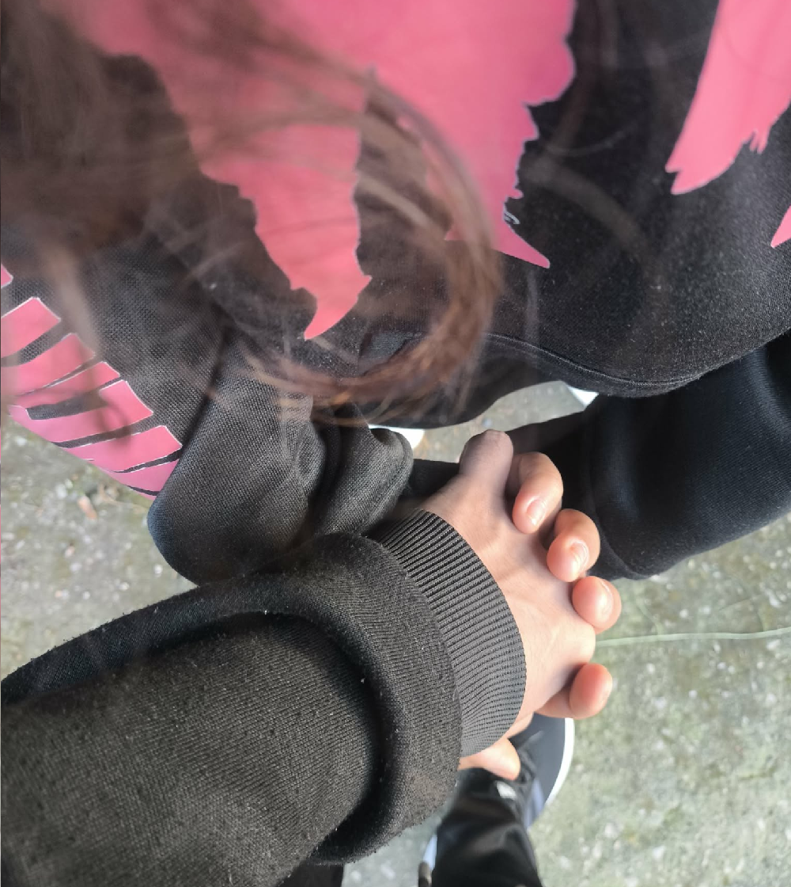
Te veo detras de esas foto, al sonreir tenuenemente cuando la alegria llega a ti, y sigo sin ver miles
de
razones por las que no te amaria. Se reafirma aquel sentimiento tan autentico y pulcro que brota de mi
corazón hacia aquel hilo dichoso del destino, futuro o incluso camino. Montones de terminos que llevan a
describir todo el tiempo por el que quisiera seguir estando enamorado de ti.
Me gustaria recitar un parrafo que me llamó la atencion, ya que en lo que me respecta me identifica
como
tu amor autentico, recuerdo haberlo leido en el libro del principito, decia algo asi.
"Si vienes, por ejemplo, a las cuatro de la tarde,
comenzare a ser feliz desde las tres"
p
Queria poder realizar esta satira tan particular y tan propia de mi, muchos pordrian regalarte una
carta
fisica, un video, un poema, una canción pero yo... Oh claro, ¿Yo ya hice todo eso no? Jaja, solo 10
meses
y mira todo lo lindo que hemos hechos juntos tu y yo mi amor bello. Esta vez queria dedicarte algo que
solo yo podria hacer, una pagina web en donde podria expresar con libertad tantas cosas que siento yo
por
ti.
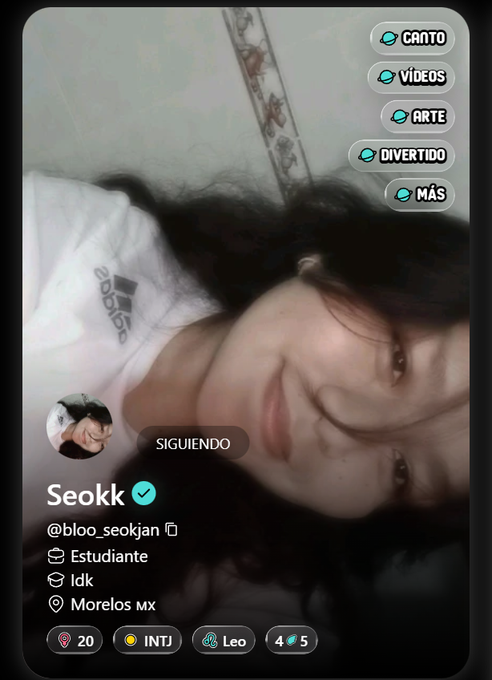
Aquella noche que estaba solo, paseando por ahi, rondando en Vrchat, en ese entonces habia salido de
tantos lugares, de tanta gente, pensando si realmente seguia la pena seguir intentando una y otra
encontrar a aquella famosa alma gemela de la que tanto habla la gente. No obstante, no sabia que justo
ese
5 de Marzo, mi vida estaba a punto de cambiar.
Una notificación llamó a mi celular, tenia tu nombre escrito en ella, la mas grata de mi sorpresas
fuera
que estaba a punto de conocer a la persona que iba a cambiar mi vida por completo, me habia equivocado
al
llamarte por tu nombre real, llamandote Seokk para que segundos despues terminara descubriendo que tu
lindo nombre era Janet, obviamente se escribe con una sola n pero al instante te apode "Jannet".
La mas buena de las sorpresas fue que me iluminaras por primera vez al decirme que lo mejor siempre
llegaba al final, me quede tan sorprendido. Fue explendido, no lo podia creer, despues de tanta busqueda
y
error y despues de haberme rendido aquella ocacion, sin intencion de provocarlo, tu me terminaste
encontrando a mi, me terminaste rescatando.
Eso fue lo que inicio toda esta linda historia de amor entre Janet y Daniel, nos jovenes que por
casualidad terminaron encontrandose en esta vida, esta afortunada vida llena de caos, aventuras,
momentos
preciados, y sobre todo casualidades. Amo que tanto tu y yo consideremos que el otro siempre va a ser la
mas linda de todas las casualidades mi cielito 💕
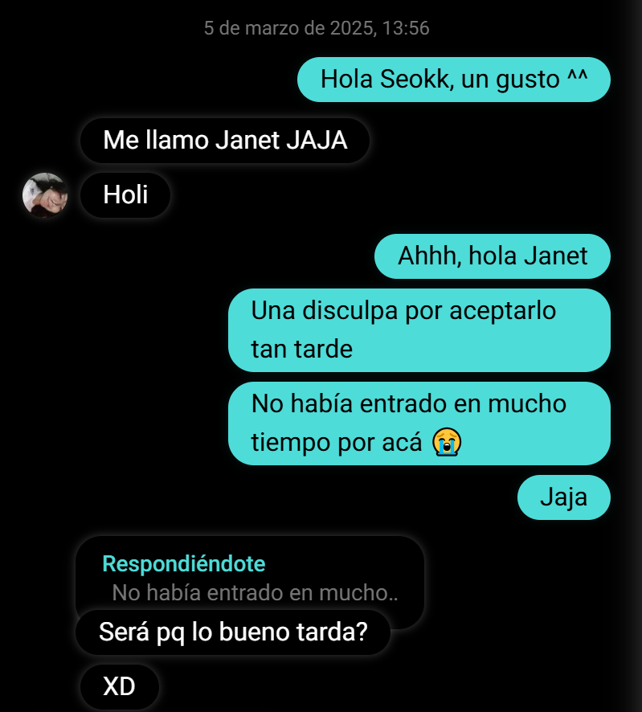
Fue entonces cuando sentimos tanta conexión el uno con el otro. Risas, chistes, comentarios,
coqueteos,
jugueteos y demas, asi mismo recuerdo que me enseñaste aquella buena banda musical, One Ok Rock, una
banda
de rock japones, dicho tema de conversación salio porque sentiste que era algo que me gustaria escuchar,
algo que encajaria conmigo, fue ahi cuando tuviste tanta razón, pues actualmente sigo disfrutando mucho
sus canciones
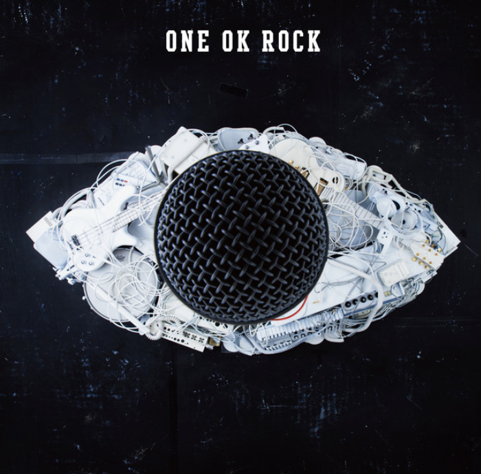
The Beginning
ONE OK ROCK
0:000:16
Dias despues empezamos a conocer mas del otro, no habia día en donde el otro no descubriera tantas
cosas
en común que teniamos. Era como un sueño, nosotros dos eramos demasiados compatibles, tu buscabas a
alguien que te amara intensamente. Por primera vez en mi vida alguien me habia dicho las palabras que yo
siempre habia querido escuchar, era inevitable sonreir. No podia creer que habia encontrado a alguien
que
queria justamente lo que yo queria ofrecerle. Mi humilde forma de amar y querer intesamente 💝.
Todavia recuerdo nuestras primeras formas para compartir el tiempo y conocernos entre otros, una muy
destacable es que ambos tenemos un buen gusto para ver series y peliculas, yo al saber en ese entonces
que
eras enfermera, en mi pensamiento de querer conquistarte a ti propuse que vieramos aquel anime que
trataba
de las celulas del cuerpo humano, asi podría demostrar cuanto se yo del mismo aun siendo que no soy de
alguna carrera de medicina y solo un ingeniero enamorado nwn.
Ese anime que se llamaba.
Hataraku saibo
El cual la trama sigue a una glóbulo rojo novata, AE3803, y a un despiadado glóbulo blanco, U-1146,
quienes luchan contra bacterias y virus para mantener la salud. En su momento me sentia muy bien porque
si
te hacia saber que yo tambien tenia intereses parecidos en el aspecto biologico del cuerpo humano ibamos
a
tener muchas mas cosas que hablar juntos y mas que nada cosas en común.
Un ingeniero que empezaba a amar profundamente a esta linda y coqueta enfemera, aunque al final no
terminamos la segunda temporada del anime, pues vimos lo escencial del anime e hicimos match icon por
primera vez de los dos protagonistas de aquel divertido anime, ah nada que ver pero, ¿Habias dicho lo
que
te gustaba de mi
no es asi? Que era diferente, friki, mayor que tu, entre otras cosas..
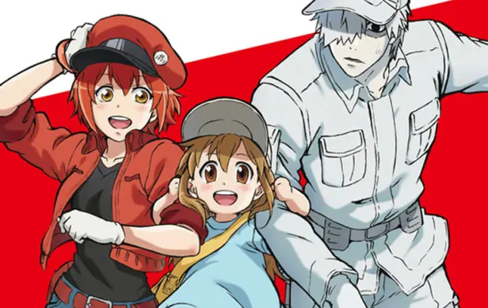
Aún recuerdo que en ese entonces me habias dicho algo como que era genial poder estar hablando con
alguien de cosas de su carrera y que no tuviera que estar estudiando algo parecido a ello. Sentí tu
comodidad conmigo justo ahi. Empece a notar el como valorabas las pequeñas cosas que yo hacia por ti,
porque me empezaste a gustar y yo queria gustarte tanto tanto, hasta que bueno, todos sabemos que no
duramos mucho conociendonos porque lo que pasó despues, fue algo inevitablemente bueno, aunque todavía
no
llegamos a esa parte lindura.
Las noches en las que el objetivo era estar con el otro, tirandonos comentarios coquetos o hasta
albureandonos fue lo que a poco empezaba a cosecharse entre tu y yo. Un amor un tanto rapido pero
sincero,
teniamos nuestras inseguridades y de verdad queriamos que esto saliera muy bien. Ya no era un chico o
chica mas del monton que estabamos conociendo y ya... Era algo mucho mas diferente, algo unico.
Otras de las cosas que notamos en común fueron algunos juegos, como el roblox, me gustó tanto poder
invitarte a nuestra primera llamada aquella vez para jugar roblox contigo. Aunque fuera la primera vez
que
el otro escuchaba la voz del otro por llamada. Me sentía tan feliz, obviamente teniamos tanta pero tanta
verguenza porque era nuestra primera llamada juntos. No sabes cuanto me divertí aquella noche junto a
ti.
Era uno de esos tantos juegos que habian sacado de squid games, aquel juego de la ruleta, aunque ambos
morimos un monton de veces estoy seguro de que la pasamos super bien y las risas no faltaron, un buen
comienzo para estas dos personas que estaban conociendose aún en ese entonces. Y asi con el tiempo
seguimos jugando en llamada más y más, era inevitable no querer estar juntos cada cierto momento.
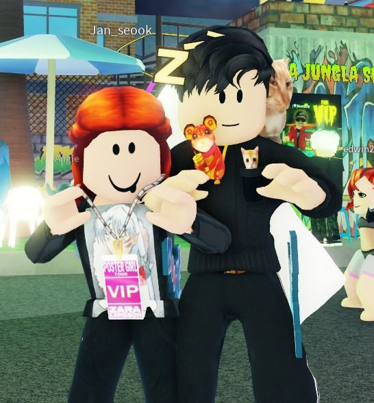
Recuerdo nuestro pasatiempo favorito a la hora de irnos a dormir los dos, escuchar musica mientras
poniamos una que otra canción para dedicarle al otro, jaja, me mostraste tantas nuevas canciones,
definitivamente ampliaste mis gustos musicales al 1,000,000% como diria el buen Senku, hablando de eso,
una de tantas cosas que tu y yo teniamos en común era precisamente que nos encantaba el anime de Dr
Stone,
es tan malote!
¿Como te lo explico? Se titula aquella canción, me contabas lo bonito que sentias al escucharla y
pensar
en nosotros dos a pesar de que aún no eramos pareja empezabamos a tratarnos como si fueramos una. Tenia
una tonada tan dulce, una letra tan linda hablando de nuestra frase favorita, tu y yo. Entablando una
conexión a futuro. Una promesa, un vinculo un compromiso para estar juntos en las buenas y en las malas.
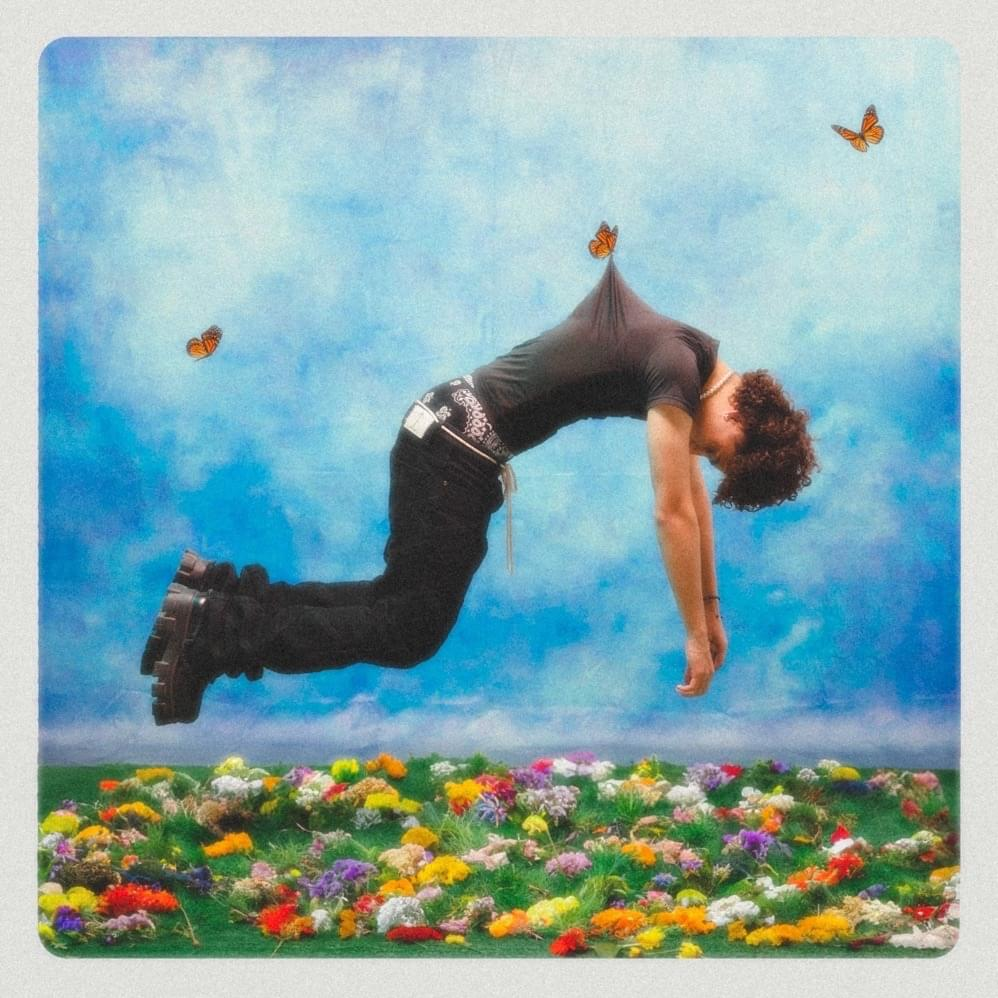
¿CÓMO TE LO EXPLICO?
DannyLux
0:000:24
Posteriormente a ello te comenté lo mucho que me emocionaba al jugar Vrchat, puesto que cuento con las
gafas de realidad virtual era una experiencia totalmente unica y tan real, lo lindo fue que tu no me
tacharas de raro o que te dejara de gustar por mis intereses y pasatiempos tan frikis. Tanto que no
rechazaste la idea de descargar el juego en tu celular para que ambos pudieramos jugar y poder tener ese
tipo de cercania virtual junto a ti.
Asi fue como lo instalaste, te ayude un poco a mostrarse como funcionaba y que se podia hacer, a ti no
te molestó nada. Paseamos por muchos mapas juntos, te lleve a una casita de infonavi, a buscarte un
avatar
para usar, entre otras cosas aquella linda noche, si me pongo a pensarlo esa fue tecnicamente nuestra
primera cita virtual y nuestra primera cita en realidad, ya que fue solo estar juntos y pasearnos por
toda
la noche juntos, charlando, divirtiendonos y pasandolo de lo mejor juntos.
En ese momento sentí una cercania mucho mayor, recuerdo que teniamos mas de 20 dias de conocernos para
ese entonces pero nosotros ya nos llevabamos muy bien, con coqueteos, bromas, con lindos apodos que nos
deciamos, mi amor, mi cielo, querida, corazón. subi creo yo nuestra primer history juntos en instagram,
la
primera de tantas que irian surgiendo conforme el pasar del tiempo.
Solo se trataba de tu y yo, la noche era nuestra y los sentimientos desbordantes cubrían las estrellas
con
su bello fulgor ❤️
Posteriormente a esa noche pasaron los días, las noches y seguiamos hablando con más y más frecuencia,
hata que fue aquel 1 de Abril por la tarde en done tu y yo conversabamos acerca de nuestros
sentimientos,
una que otra broma con desliz a más intención hablando acerca de como todo va a ser mucho mas lindo
cuando
seamos novios, cuando el siguiente paso finalmente se de.
No recuerdo especificamente cual fue el comentario que yo tiré pero recuerdo que habias dicho que no
lo
dijera porque no te querias ilusionar. Fue ahi cuando empece a ver tus sentimientos mucho mas allá,
empece
a ver lo que querias, pense que pronto seria el mejor momento para finalmente armarme de valor para
pedirte que seas mi novia. Como no querer hacerlo, te veía, te escuchaba, tu risa, toda tu, y lo sabia
perfectamente. Estaba completamente enamorado de ti
Ese día recuerdo haber visto un tiktok sobre la pelicula "El aprendiz del hechicero" una pelicula muy
buena, puesto que era de ciencia ficción y a te encanta ese genero. Finalmente propuse verla juntos ya
que
se me hacia un excelente plan de cita para los dos, en realidad yo no tenia nada preparado en ese
momento,
pero al terminar la pelicula me dio por hablar lo mucho que me gusta esa pelicula, mis sentimientos y
como
me identificaba un poco con el protagonista de dicha historia.
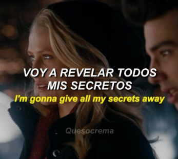
Secrets
OneRepublic
0:000:37
Entonces conté lo feliz que me hacias dia con dia, lo tan enamorado que estoy por ti, eso mas sumado a
aquella canción caracterisitica de la banda sonora de la pelicula, Secrets de One Republic, me extendi,
asi que usando la inspiración que tenia por el final de la pelicula, en donde el protagonista escribe en
una hoja, una sola pregunta...
¿Amiga o novia?
Entonces, hubo un pequeño silencio, yo estaba muy nervioso al respecto asi que te pregunte... No
queria
sonar muy cliche diciendo algo como ¿Serias mi novia? o cosas parecidas, hable un poco mas a compromiso
preguntandote, ¿Te gustaría que fueramos pareja? Aun que bueno, asi sonó en mi mente, en realidad me
trabé
todo y sinceramente no se siquiera que dije.
Pero estaba porfavor implorando que dijeras que si, decia, si dice que no pues ni modo, lo intenté,
¿Talvez falta seguir conociendonos? despues surgió ese rol de profesor y alumno por alguna razón y me
preguntas cual deberias escoger. ¿Cuál era la respuesta correcta? mencionaste, fue entonces cuando me
puse
a buscar la respuesta que me haría feliz a mi y fue tu reacción cuando entendi que no solo a mi me haría
feliz.
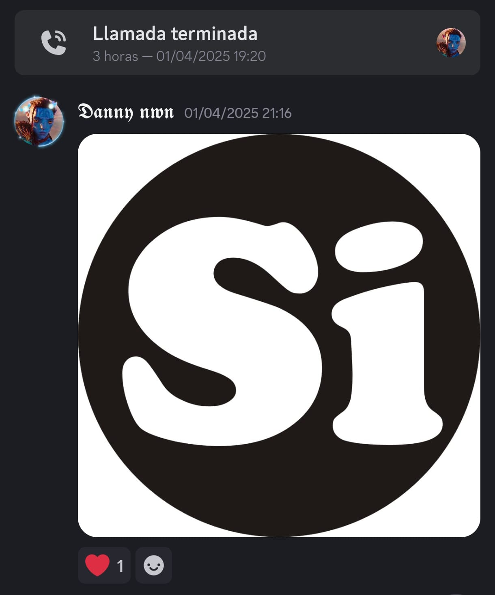
Mandé al chat una imagen diciendo "Si", despues procediste a reir un poco y finalmente me dijiste, es
correcto. Es un si, la respuesta era si, si quieres ser mi pareja, estabamos tan emocionados, recuerdo
haber dicho que iria a tomar agua pero antes de ir, silencie mi microfono y di un salto de felicidad,
pues
se me habia cumplido y se sentia incluso como la primera vez, no podia creerlo, ¿De verdad esto acaba de
pasar?
Yo no tenia nada planeado, simplemente surgió de la nada, mis sentimientos hablaron por mi y todo eso
nos llevó hasta aca, despues de 10 casi 11 meses junto escribiendo esta carta virtual para ti linda ❤️.
Esa noche al terminar la llamada, cada quien empezó a prepararse para ir a dormir, fue entonces cuando
me llegó un reel tuyo en donde proponia la idea de "Dormir juntos" en llamada. Era una explendida idea,
es
decir, sabia que hay personas que lo hacen pero realmente nunca me habia interesado o algo realmente por
lo cual nunca lo intente. Pero contigo super de inmediato que si queria probarlo, queria irme a dormir
junto a ti todas las noches, fue ahi cuando te llame de nuevo desde el celular.
Era incontenible la alegría que ambos teniamos, habia sido el mejor día de todos y nos iriamos a
dormir
siendo novios, la mejor sensación de todas, posteriormente nos pusimos a escuchar musica que tanto nos
gusta a nosotros hasta que al final terminaron siendo canciones dedicatorias para el otro, montones de
canciónes de amor que le dedicamos al otro, recuerdo que hasta cantamos juntos, fue un momento magico,
finalmente lo habia logrado, encontre a la chica que tanto amo aquella de la que me enamoré tan
profundamente, aquella a la que tanto gusto me da llamar mi amor 💓
Sentia como si en verdad estuvieras enfrente de mi acompañandome en esta velada. Fue la noche mas
linda
de todas. Poco a poco ibamos cantando y cantando hasta que nuestras voces iban cesando lentamente al
sueño
por la hora que era. Fue cuando por primera vez nos despedimos para ir a dormir en llamada. Cosa que
seguimos haciendo actualmente, ya sabes lo que siempre le decimos al otro de.
Buenas noches, descansa mi amor. Ten una linda noche, nos vemos. Te amo ❤️
Convirtiendose en una bella tradición nuestra cada vez que nos despediamos en llamada a partir de ese
día empezamos a ser novios, ese 1 de Abril del 2025, la fecha tan especial que mi corazón atesorará por
toda la vida Jannet.
Y asi empezamos nuestra vida juntos de novios, ya podiamos prometernos cosas lindas, haciamos match
icon en todas partes, en todas nuestras redes sociales siempre habia algo referente a nosotros. Nos
enorgullecia ser pareja, saber que tanto nos hacia feliz el otro, que tanto nuestros sentimientos iban a
ser valorados, que tanto ibamos a ser amados dia con noche sin final.
La razón por la que me enamore de ti y por la que estuve tan seguro de pedirte ser mi novia a tan solo
25 días de habernos conocidos los dos, fue que yo nunca te tuve que decir como tratarme, despúes de
tanta
busqueda y desespero, despues de haberme rendido en encontrar a alguien que encajara tan bien con mi
forma
de amar, despúes de haber pasado por tantas personas que nisiqueira sabian lo que querian. Tanta gente
que
no iba al punto, tanta que no me terminaba de gustar del todo, me di por vencido, deje de entrar a Boo
porque no sentia que encontraría algo bueno algun día. Bendito el día que se me ocurrío aceptar tu match
para que nuestros caminos se juntaran y pudieramos crear todo esto que hoy en día nos hace tan felices.
Me gustaria mencionar 100 cosas que me gustan de ti, talvez sea algo largo pero ahora es mi turno...
Tu forma de ser siempre.
Tu bellos lunares.
Tu sonrisa tan unica.
Tu voz.
Tu ondulado cabello.
Tu sonrisa tenue.
Tu manera de decirme te amo.
Tu nariz linda.
Tus ojos achinados.
Tu solución para llamar mi atención.
Tus gustos musicales.
Tus lindas mejillas.
Tu manera de vestir.
Tus sentimientos hacia mi.
Tu consideración.
Tus regalos.
Tu escritura.
Tus garabatos.
Tu aroma tan dulce.
Tu forma de tratarme cuando me siento mal.
Tu manera de consentirme.
Tu mirada al verme.
Tus dientes timidos.
Tu luz.
Tu cafe reflejado en tus pupilas.
Tu cantar.
Tus lindas palabras.
Tus cartas.
Tu confianza por mi.
Tus edits lindos.
Tus abrazos.
Tus besos.
Tu stickers.
Tu humor.
Tus memes.
Tus notas dedicatorias.
Tus fotos.
Tu manera de cargar territorio.
Tus detallitos.
Tus manualidades.
Tus caricias.
Tu aprecio hacia mi.
Tus videos.
Tus reels.
Tus tiktoks.
Tu extrañar hacia mi persona.
Tus pucheros.
Tus enojos.
Tu forma de molestarme.
Tus dedicatorias.
Tu nombre en mis notificaciones.
Tus apellidos.
Tus hijos nuestros.
Tu hospitalidad.
Tus adaptaciones.
Tus metas.
Tus sueños.
Tu paz.
Tu amor hacia mi.
Tus labios.
Tus compromisos junto a mi.
Tu propuestas.
Tu manera para llamar las cosas.
Tu perspectiva.
Tu sentir.
Tu vida juntos.
Tu futuro conmigo.
Tu cuello.
Tu cadera.
Tus manos.
Tus coqueteos.
Tu forma de verme.
Tu descripción de mi.
Tu pasear junto a mi.
Tu fuerte querer.
Tu esperar.
Tu madurez emocional.
Tu responsabilidad sentimental.
Tu llamado.
Tu manera para hacer que me sienta en casa contigo.
Tu increible forma de alegrarme los días.
Tu confort.
Tu bailar conmigo.
Tu tontear junto a mi.
Tu cosquillas.
Tu voz coreana.
Tu preocupación hacia mi.
Tu emoción tan fuerte al verme.
Tu manera de querer mi amor intenso.
Tu doramas buenisimos.
Tus busquedas de mi afecto.
Tu autoridad sobre mi como mi novia.
Tu caracter fuerte.
Tu determinación.
Tu autonomia.
Tu inteligencia.
Tus formas de contentarme.
Tu capacidad para lograr muchas cosas.
Tu sentido de responsabilidad.
🍊Tu forma para hacer que todos mis dias se sientan como primavera❤️
Y me parece aun poco para poder describir totalmente todo lo amo de ti mi querida Jannet, recuerdo
que
a lo largo del primer mes soliamos estar por ratos en vr en citas, escuchando musica, cantando, jugando
tantos mapas diferentes en roblox, desde conducir en parejas, jugar muchos obbys de 2, encadenados,
saltando, tirando, bebe, gordo, etc. A cualquier minima oportundiad nos gustaba mucho poder compartir
nuestro tiempo para disfrutarlo en nuestras lindas citas de novios, apenas las primeras semanas de
serlos.
Los recuerdos estaban creciendo por todas partes, siempre tenia algo nuevo que compartir contigo, algo
nuevo que subir a mis redes sociales, a mis historias, algo nuevo en donde etiquetarte, algo que me
recordara a ti para poder mandartelo, vi este atardecer y me acorde de ti, vi esta flor y me acorde de
ti.
Siempre has vivido en mi cabeza, en cada pensamiento, lo muy feliz que me haces todos los días. Teniamos
racha del tiktok o de la app de Couple Joy que contaba cuanto llevabamos siendo novios y nos hacia
pequeñas encuestas o preguntas diarias para conocernos mejor.
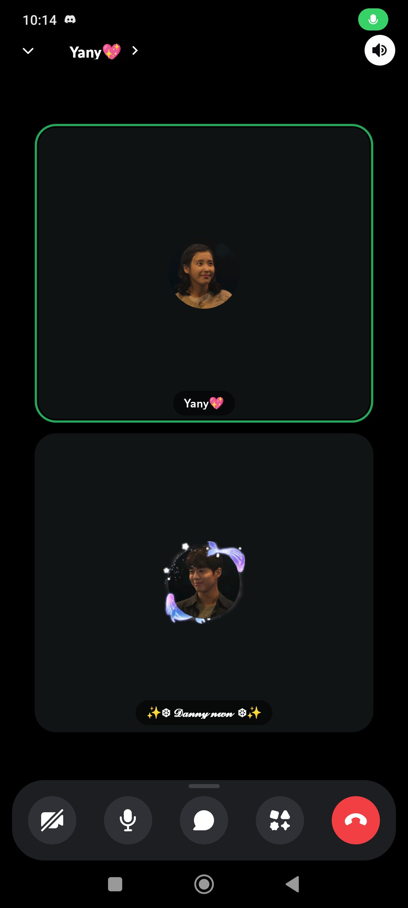
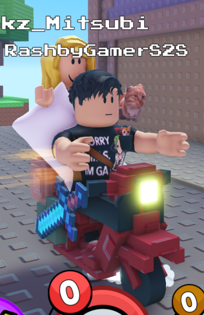
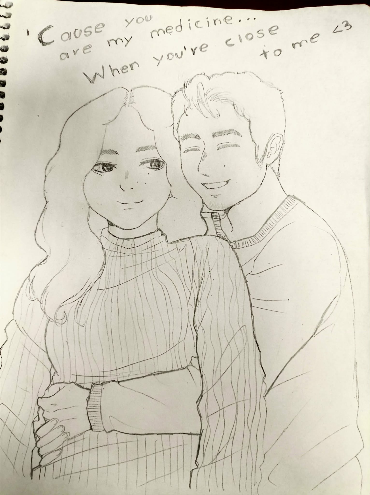
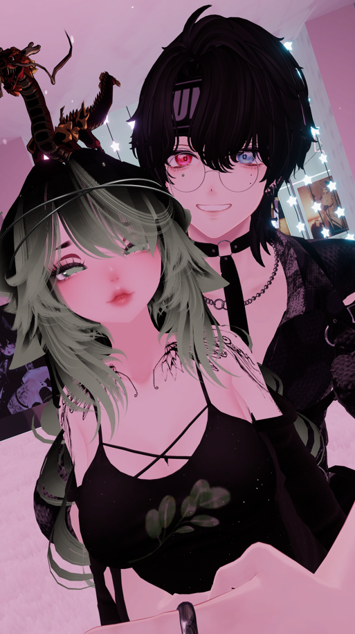
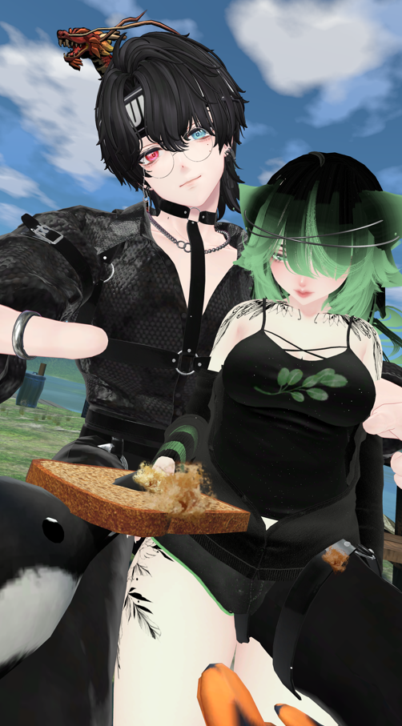
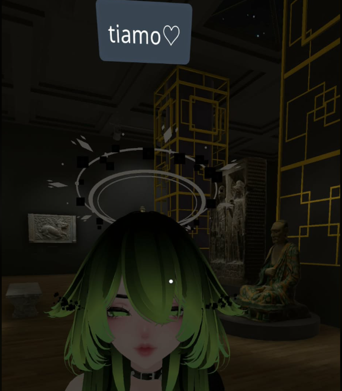
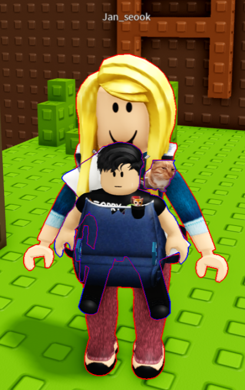
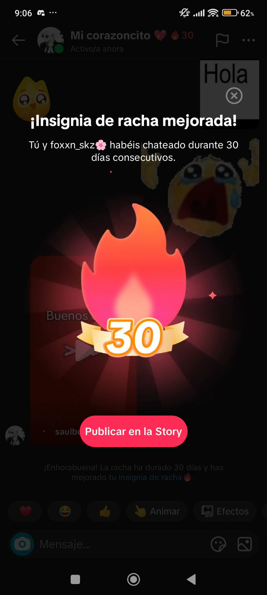
Y asi fue como pasamos nuestro primer mes juntos querida, de hecho tambien recuerdo una ocación
especial
en la que entramos a VRChat y fuimos a un mapa que tenia un reproductor de videos, dibujamos un poco,
garabos, nombres, corazones y empezamos a dedicarle musica al otro, fue ahi cuando me presentaste la
canción Abyys de Dawn. Una canción que te recordaba a mi, un reflejo de sentimientos y significado en
aquella, hablando de la compañia del otro y del como si uno cae el otro ira a acompañarlo dentro del
abismo, la letra decia algo exactamente como esto:
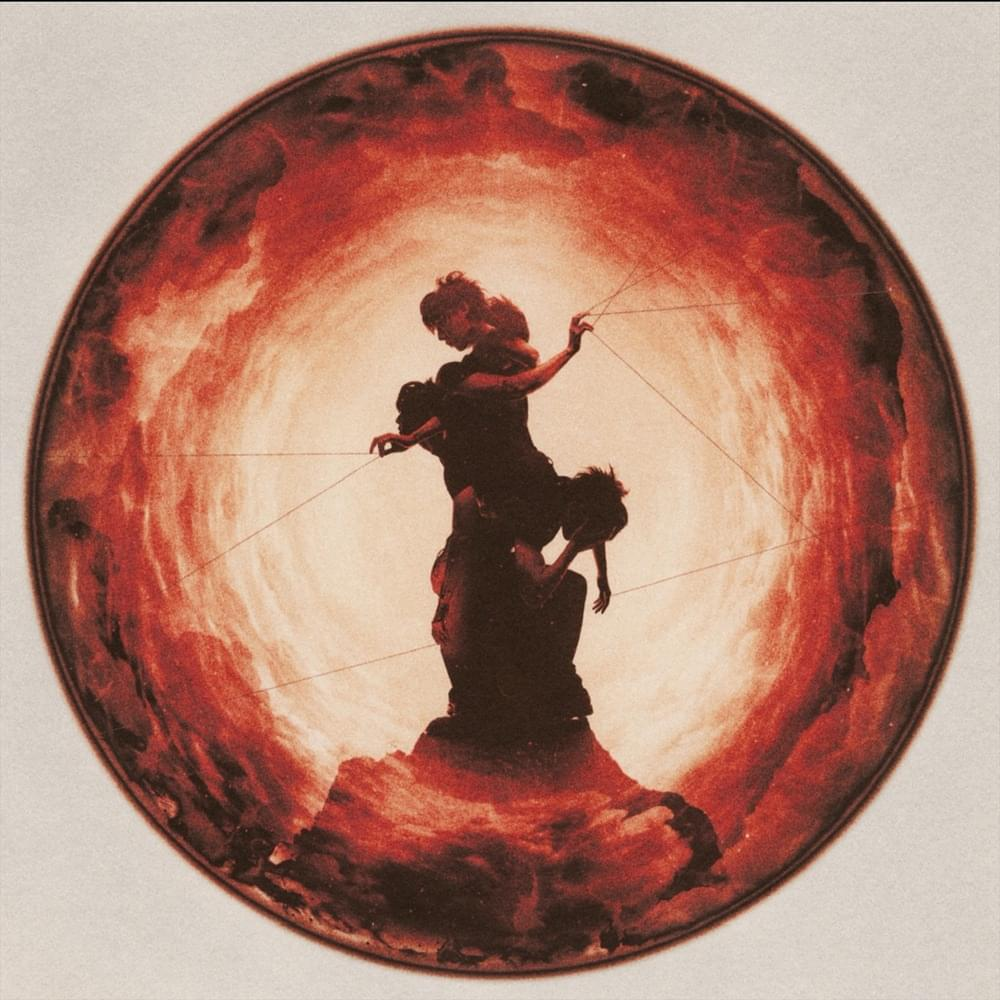
Abyss
던 (DAWN)
0:000:21
Ella tiene demonios bailando en su cabeza
She's got demons dancing inside her head
Sus lágrimas me hieren pero nunca me asusto
Her tears cut me but I never get scared
Por dentro y por fuera incluso amo sus dudas
Inside and out I even love her doubts
Juntos estamos cayendo
Together we are fallin'
Oh, realmente somos algo, sí
Oh, we are really something, yeah
Saltaremos del precipicio si eso es lo que ella necesita
We'll jump off the ledge if that's what she needs
Nos sumergiremos en la oscuridad, en el abismo
We'll dive into darkness, to the abyss
Toma mis manos, mira en mis ojos
Hold my hands look in my eyes
Estoy listo ahora, nos vemos volar, nos hemos ido
I'm ready now see us fly we are gone
Bajo la superficie donde es más profundo que los secretos que compartimos tú y yo
Beneath the surface where it's deeper than the secrets you and I share
Iré besaré una vez más, estaremos bien, dolor o desesperación
I'll kiss you one more time we'll be fine pain or despair
De pies a cabeza amo cada cicatriz tuya, sí
From head to toe I love your every scar, yeah
Cielo o infierno, estaré allí contigo
Heaven or hell I'll be right there with you
No te dejaré caer en espiral sola, voy contigo
Won't let you spiral down all alone I'm goin' with you
Por siempre entrelazados, somos uno, estoy aquí contigo
Forever intertwined we are one I'm here with you
Por dentro y por fuera incluso amo tus dudas, sí
Inside and out I even love your doubts, yeah
Cielo o infierno, estaré allí contigo
Heaven or hell I'll be right there with you
Despues sucedió aquel bello día, el día en donde cumplimos 1 mes de haber sido novio, yo no tenia
contemplado que tu habias preparado una sorpresa para mi. Esa vez hable con mis amigos para que me
ayudaran como mayordomos en una cita para poder celebrar juntos en vrchat que habiamos podido completar
un
mes estando juntos y siendo felices, fueron bromas y roleos que terminaron en muchas fotitos para
celebrarlo entre los dos, que bonita experiencia fue gracias a ti 💓
Posteriormente una vez terminara la cita en VRChat salimos y nos quedamos en llamada más tiempo, me
propusiste jugar unos obbys en roblox en lo que daban las 12:00am... entonces cuando llegó el momento
algo
apareció en mis notificación tu nombre junto a un mensaje algo largo... para mi sorpresa era una carta,
la
habias escrito tu. Yo siempre habia anhelado tener una carta y tu me lo habias cumplido... ¿De verdad
era
esto cierto?
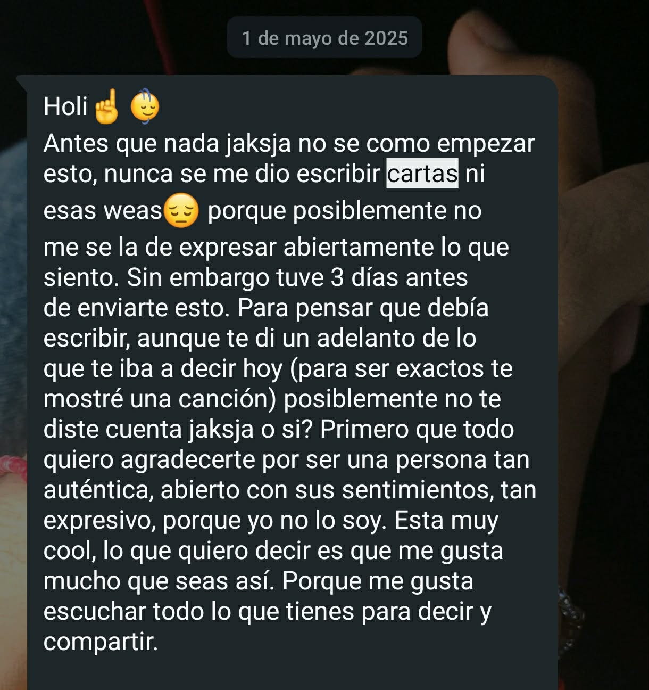
Leer esta carta en su momento fue algo tan… no se, tan inexplicable que hasta ahora me cuesta ponerlo
en
palabras 😔 la recuerdo y siento ese mismo calorcito en el pecho, como si el tiempo regresara a ese
instante donde la leí con el corazon latiendo rapido y una sonrisa bien tonta pegada en la cara. Fue de
las cosas más lindas que me han escrito en mi vida, bueno... la unica que me habian escrito una, y no
por
lo perfecta que estuviera, sino por lo real,
lo tuyo, lo lleno de sentimientos que estaba cada linea. Se notaba el nervio, el amor, las ganas,
incluso
esos pequeños errores que la hacian mas humana, mas tu… y eso la volvió perfecta para mi. Sentir que
alguien se tomó dias para pensar que decir, que buscó canciones, que escribió 103 razones para amar… eso
no se olvida nunca, eso se guarda como tesoro. En ese momento me senti escogido entre galaxias, entre
mundos, entre todo, y creeme que no hay cosa mas fuerte que sentirse amado asi, tan sin filtros, tan sin
miedo.
Agradezco tanto haber recibido esas palabras, porque no solo fueron letras, fueron promesas, fueron
sueños compartidos, fue una declaración de “te elijo mil veces” escrita con el alma abierta. Cada frase
me
hizo sentir visto, aceptado, querido incluso con mis dudas y cicatrices, y eso… eso no cualquiera lo
regala. Me hiciste sentir hogar sin tocarnos, primavera sin estaciones, eternidad en un simple primer
mes.
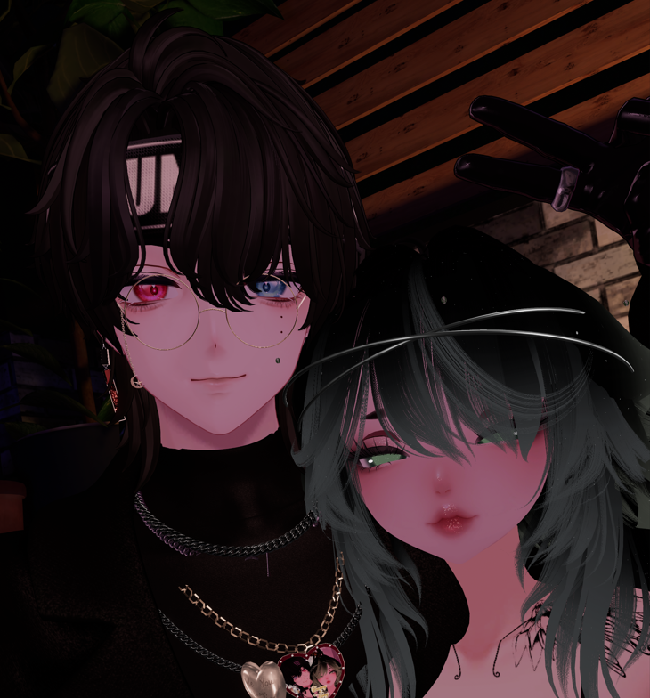
Esa carta fue un abrazo largo en forma de texto, fue un “cielo o infierno, voy contigo” que me hizo
creer que el amor puede ser asi de intenso, asi de loco y bonito al mismo tiempo. Gracias por haberme
amado de esa manera hasta la fecha, por haber escrito con el corazon temblando pero sincero, porque
aunque
el tiempo
pase, siempre voy a recordar lo lindo que fue leer algo tan lleno de luz y sentir que, por un momento,
el
universo entero cabía en esas palabras 💗
Ese día se volvió memorable, irremplazable, a todo esto, habia olvidado contar alguno de mis
pasatiempos lindos cuando tenia tiempo libre fuera de casa, en ese entonces queria volver a dibujar
tradicionalmente y que mejor escusa que dibujarte a ti, grató para mi que empezaras a mandarme fotitos
de tu carita piciosa mi amor me encanta, estas toda chula, linda, hermosa, tierna, chula, mi querida
princesa, amor de mi vida me encantas a la verga MI AMORRRRRRRRRRRR DENME, MI MUJER. Digo- Me calmo nwn.
💗
Aunque perfectamente habia notado que cada vez que yo te dibujaba más mejor me salia tu bello rostro
yo se que seria incapaz de poder replicar la belleza de tu hermoso rostro corazón, cada trazo, cada
linea, cara borrada y corregida con el proposito de plasmar tu explendidad... Dios, ¿Ya te dije cuanto
me encanta tu rostro? Tus lindos lunares, me encanta que tengas tantos lunares en tus mejillas, tus
ojitos cuando se achinan al reir, el huequito alado de tu sonrisa, es una belleza digna de admirar, mi
amor te amo te amo te amo te amo te amo te amo te amo te amo te amo te amo te amo te amo te amo te amo
te amo te amo te amo te amo te amo te amo te amo te amo te amo te amo te amo te amo te amo te amo te amo
te amo te amo te amo te amo te amo te amo te amo te amo te amo te amo te amo te amo te amo te amo te amo
te amo te amo te amo te amo te amo te amo te amo te amo te amo te amo te amo te amo te amo te amo te amo
te amo te amo te amo te amo te amo te amo te amo te amo te amo te amo te amo te amo te amo te amo te amo
te amo 💗
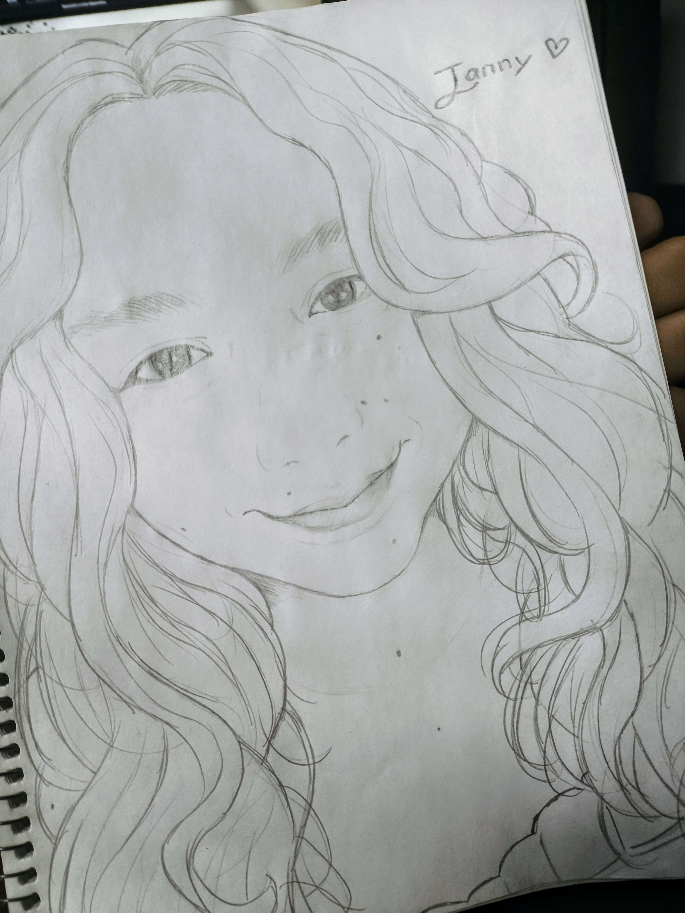
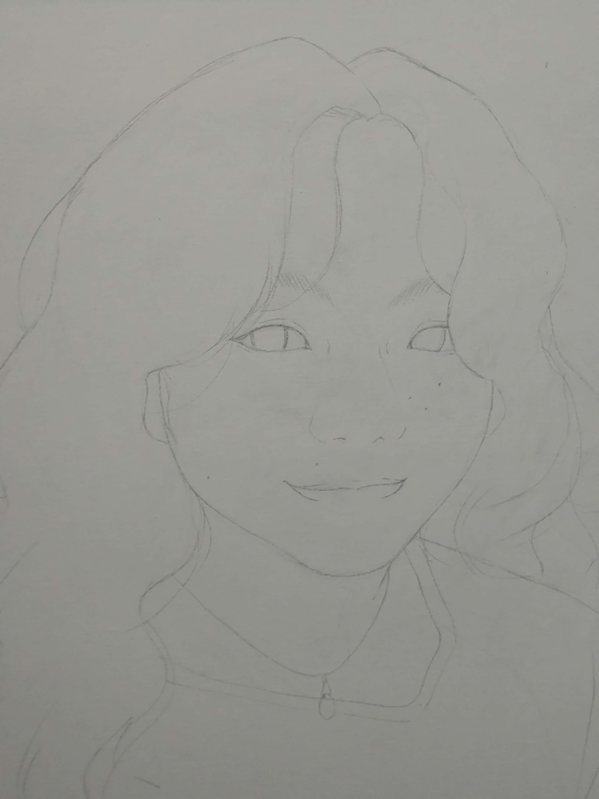
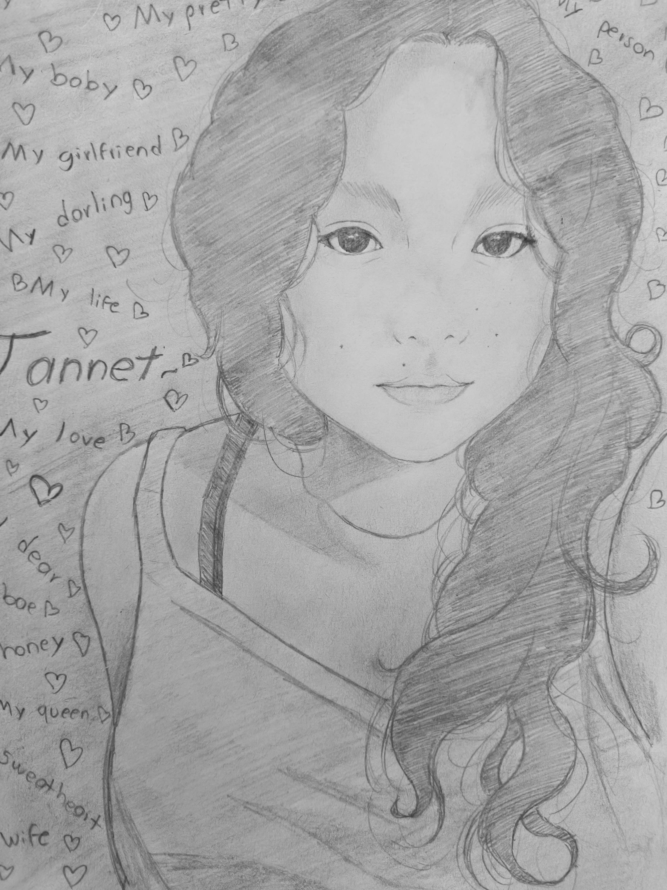
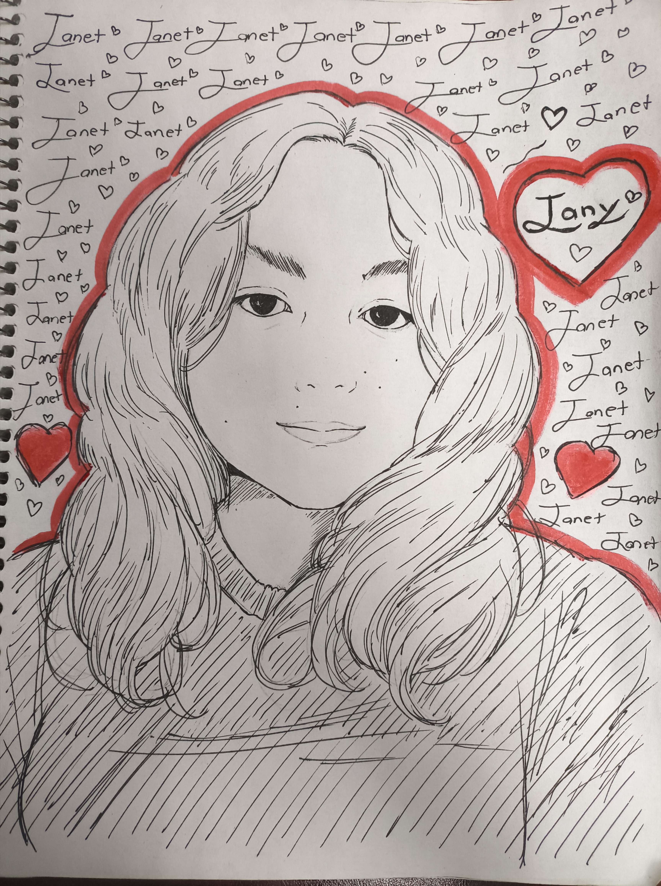
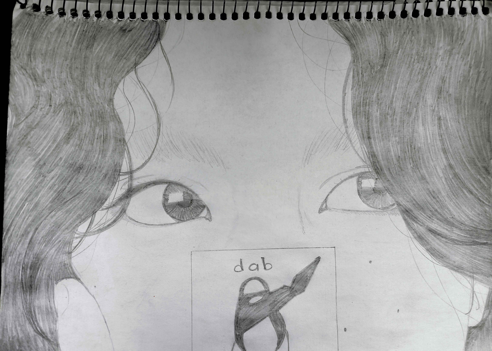
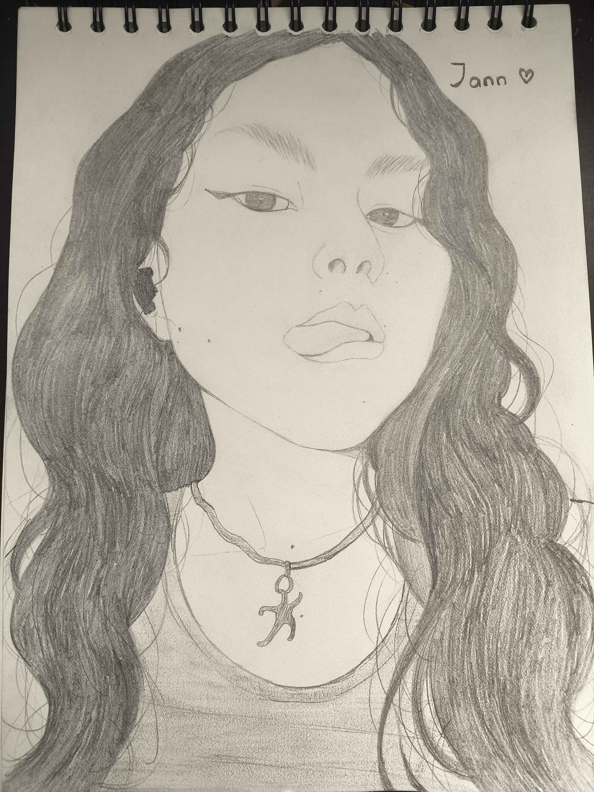
Ahh, mi linda, recuerdo las veces que haciamos dinamicas de pareja, son muy divertidas a mi parecer, y
haciendo eso nos damos cuenta de que tanto se parece el uno del otro, con cada día que pasaba era como si
el mismisimo destino nos estuviera diciendo que eramos el uno para el otro. Compartiamos gustos musicales,
series, situaciones, traumas y todo. Que locura que ambos nos hayamos caido y golpeado en la cabeza cuando
eramos niños xD.
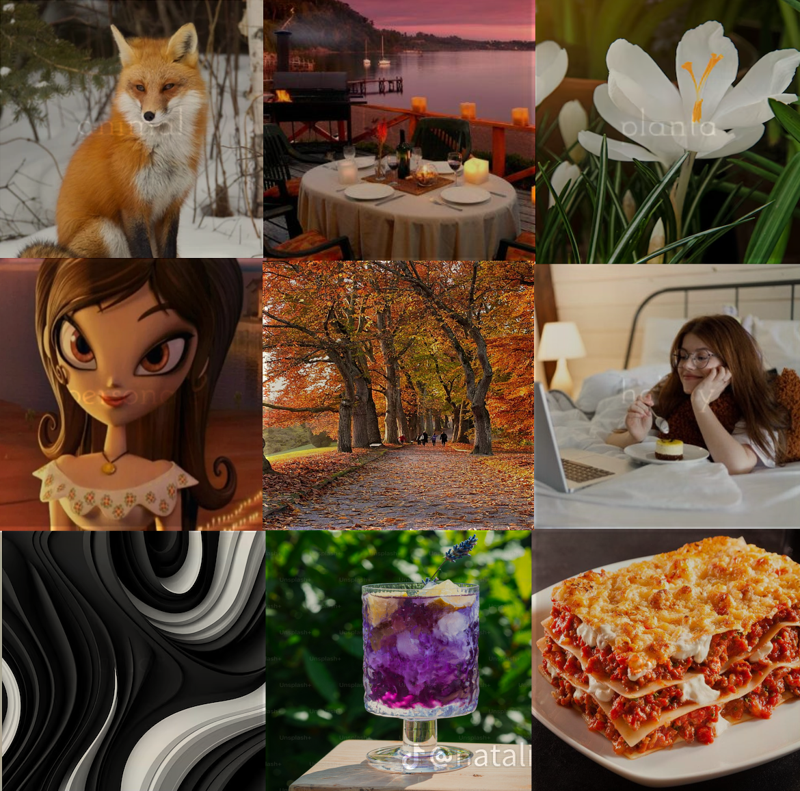
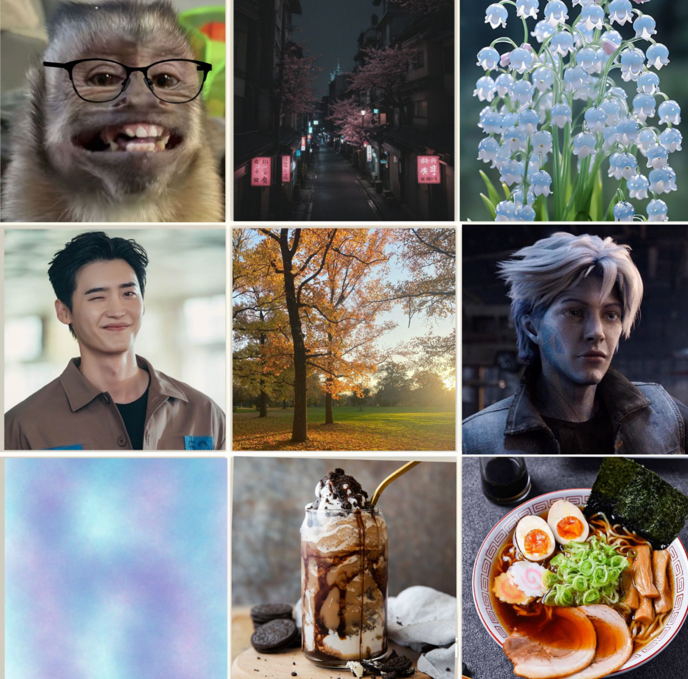
Una de esas dinamicas que hicimos fue cuando dibujamos el picrew del otro, bueno, dibujar como tal
realmente no pero hicimos un avatar del otro. De como nos veiamos, sus detalles, cabello, ojos, nariz,
lunares, de todo. Una representación fisica. Ahh algo que me sigue encantando de ti es que te guste tanto
con o sin la barba, eso es tan lindo de un amor incondicional, del amor autentico que tu mi amor me das.
Me hiciste el personaje super guapo y me quede tan sorprendido, a tus ojos soy mucho mas de lo que yo creo
que soy y por eso amo tu perspectiva, es lo bueno d eque seamos tan buen equipo jaja.
Despues nos pusimos a hacer unos de esos marcos en donde aparecen varios aspectos del otro, como lo
veiamos en animal, que flores le recordaban al otro, personaje animado, estación del año, bebida y creo
que hasta flor según recuerdo, fue ahi cuando me dijiste que sentias que mi animal espiritual era un mono
silindrero de esos que estan en los circos, por mis cejas y por mis expresiones según xD. Eres una
graciosita mi amor eh, que chistosita.
Despues llegó ese momento en donde cumplimos 2 meses de haber estado como novios oficialmente, tenia
preparada una sorpresa puesto que el primer mes fuiste tu quien me la dio a mi y no podia quedarme yo con
ambos brazos cruzados, claro que no de ninguna manera. Estuve pensando y pensando que podria hacer, que
podría ser bueno para regalarte y poner mis sentimientos en dicho regalo, un detalle a tal escala y a tal
nivel pero que sea tan propio de mi, fue ahi cuando esa ultima frase me dió la respuesta que tanto
buscaba.
¡Un video!
Hace unas semanas atras habia hecho un edit de nosotros con la canción Melancholly Hill De Gorillaz,
porque esa canción la considero una de las más bonitas y tiernas para dedicarsela a alguien y que mejor
que con un video mismo. Fue entonces cuando se me ocurrio rehacer ese corto video por uno mas actualizado
con mas fotos de nosotors, de momentos que habiamos estado viviendo estas ultimas semanas, de nuestras
aventuras juntos, de nuestro eterno y lindo amor y este fue aquel resultado 💘
Aún asi sentia eso mismo no era suficiente asi que mejor forma de plasmar los sentimientos era
escribiendote un poema donde relataba una historia parecida a esta tambien pero con versos y rimas hacia
ti mi amor, normalmente antes solie escribir versos para conquistarte o para que me perdonaras ciertas
cosas pero esta vez ambicionaba a algo muy grande.
En el esculpi mis sentimientos… suena exagerado pero asi lo senti, como si cada palabra fuera cincel y
yo estuviera tallando algo que no queria que el tiempo borrara nunca. Fue un acto simple, escribir, nada
mas eso… pero al mismo tiempo fue unico, casi sagrado. Me sentaba y escribia, y volvia a escribir, y
borraba, y regresaba a empezar porque nada parecia suficiente para lo que llevaba dentro. Y mientras lo
hacia, sin darme cuenta, me volvia a enamorar otra vez, como si cada recuerdo fuera una chispa nueva.
Recordaba como habia sido todo en tan pocos meses… tan rapido pero tan intenso, como si hubieramos
vivido
años en solo dias. Me acordaba de las risas, de los mensajes a deshoras, de las canciones compartidas, de
esa sensacion tan rara pero tan bonita de sentirme en casa con alguien que estaba lejos. Y cada recuerdo
me apretaba el pecho de una manera dulce, de esas que duelen pero bonito.
Despues lo narré… y fue distinto, porque ya no eran solo letras calladas, era mi voz temblando un poco,
intentando sostener todo lo que sentia sin quebrarse. Use mi voz lo mas elocuentemente que pude, aunque no
soy experto en hablar bonito ni en acomodar emociones, pero hice el intento, porque queria que se sintiera
real, que se sintiera vivo. Cerraba los ojos mientras lo decia, como si asi pudiera viajar a cada momento
que estaba contando, como si pudiera tocar otra vez esos instantes.
Hubo partes donde casi se me corta la
voz, donde tuve que respirar hondo para seguir, porque no es facil desnudar el alma asi, sin proteccion.
Pero aun con errores, con pausas raras, con palabras mal dichas… fue sincero. Y creo que eso fue lo mas
importante, que cada sonido llevaba verdad, que cada frase tenia pedacitos de mi corazon pegados, como si
al hablar estuviera entregando no solo una historia… si no todo lo que alguna vez senti.
Winter
V
0:000:30
Aún asi sentia eso mismo no era suficiente asi que mejor forma de plasmar los sentimientos era
escribiendote un poema donde relataba una historia parecida a esta tambien pero con versos y rimas hacia
ti mi amor, normalmente antes solie escribir versos para conquistarte o para que me perdonaras ciertas
cosas pero esta vez ambicionaba a algo muy grande.
Una vez me hiciste sentir una calma y un sentimiento tremendo con nuestra relación. El tema de
conversación salió normalmente como cualquier otra situación en nosotros, el punto es que llegó ese
sentimiento de intimidad que tanto me gusta tener junto a ti. Cuando solias decirme como sentias nuestra
relación como un
fuerte pensamiento, como una canción que tu ya conocias, que te hacia recordar a mi, a nuestro amor,
nuestro
tiempo juntos, el titulo de la canción era...
Algo que se me olvidó mencionar fue cuando vimos aquel dorama llamado "Si la vida te da mandarinas" el
cual fue el primer dorama que yo veia en toda mi vida, y lo que lo hacia mucho mas especial es que fue
contigo esa ocación, desde inicio a fin, dios creo que nunca habia llorado tanto con una serie o pelicula
en toda mi vida. Si han habido animes que me han puesto en tal nivel sentimental al respecto pero como ese
dorama... ninguno otro.
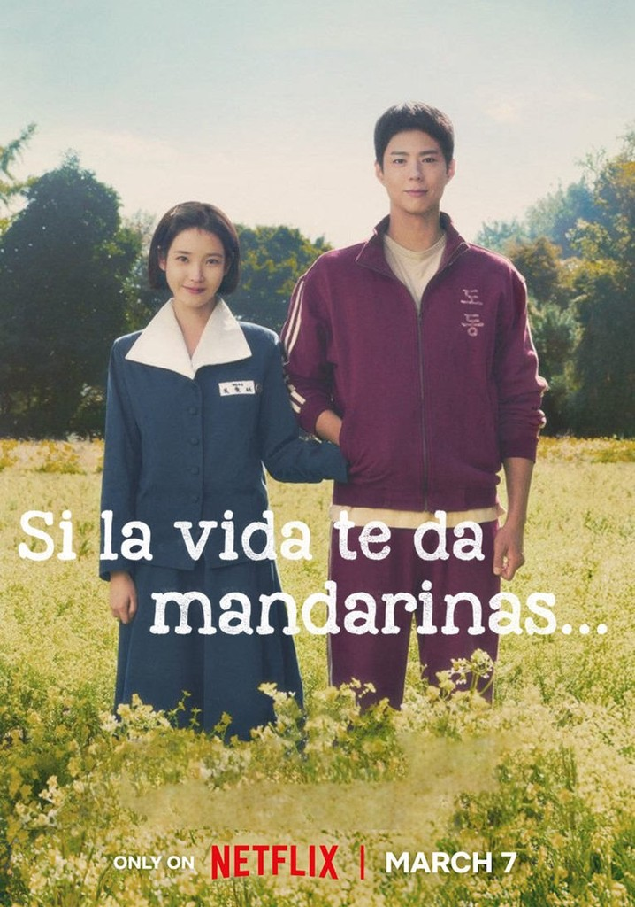
La sinopsis decia esto: “Si la vida te da mandarinas” es un conmovedor K-drama que cuenta la historia de
amor de Ae Sun (IU), una joven llena de sueños y ambiciones, y Gwan Sik (Park Bo Gum), un hombre leal y
lleno de bondad. Juntos, nos guían a través de una historia que no sólo explora su relación, sino cómo la
vida los cambia con el paso del tiempo..
Recuerdo que en el capitulo final, cuando Ae-sun se despide de Gwan-sik, no es una despedida llena de
dramatismo exagerado…
es tranquila, profunda, casi silenciosa, como el amor que siempre tuvieron. Gwan-sik, aun sabiendo que su
final está cerca, no muestra miedo por sí mismo, solo preocupación por ella. Sus palabras giran alrededor
de haber vivido bien, de no arrepentirse de haberla amado, de agradecerle por haber sido su vida entera.
Entendi lo mucho que queria vivir una vida entera junto a ti... Recuerdo que al terminar el ultimo
capitulo te pregunte llorando a mares... ¿Te gustaría envejecer junto a mi?
Al final entendí que si la vida te da mandarinas… no siempre es para que te quejes porque no fueron
naranjas. A veces son más pequeñas, más ácidas, con semillas que molestan y cáscara difícil de quitar,
pero aun así guardan un dulzor escondido que solo descubres si decides abrirlas. La vida no siempre te
entrega lo que esperabas, ni en la forma que soñabas, pero eso no significa que no tenga valor. A veces lo
inesperado, lo que parecía insuficiente o distinto, termina siendo justo lo que necesitabas para crecer,
para aprender, para sentir de verdad.
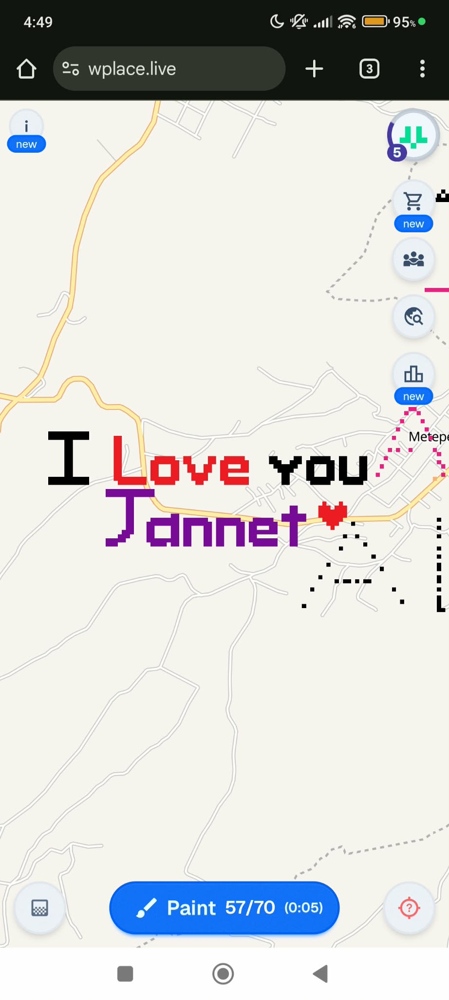
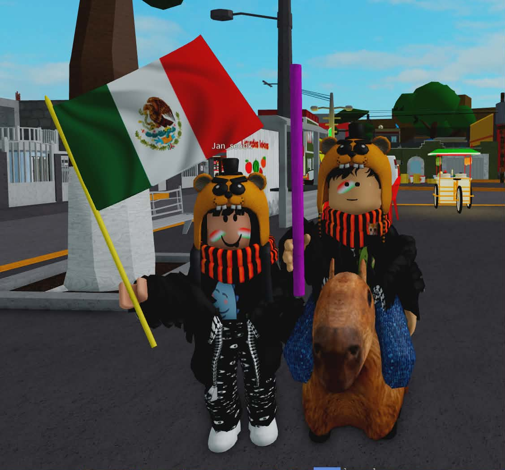
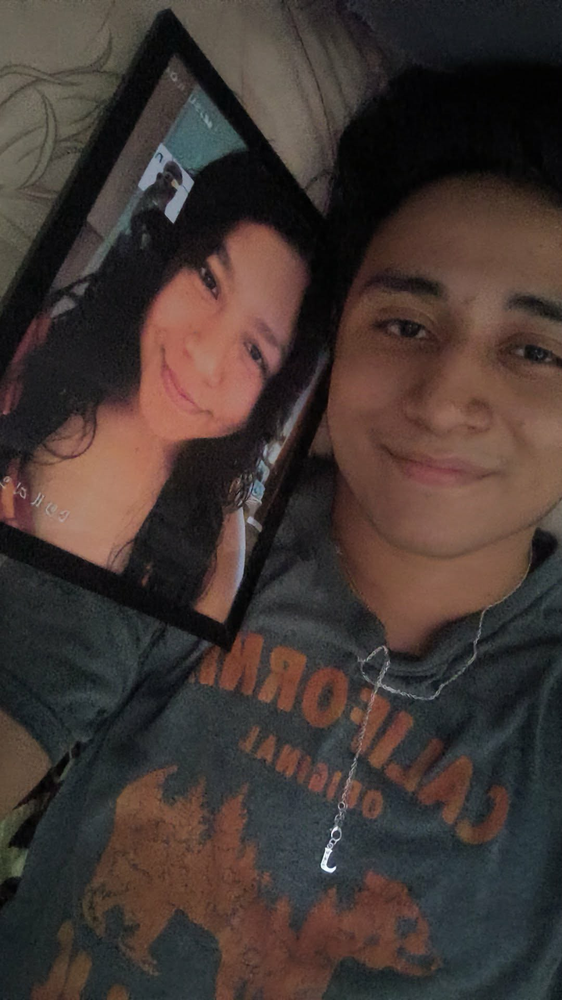
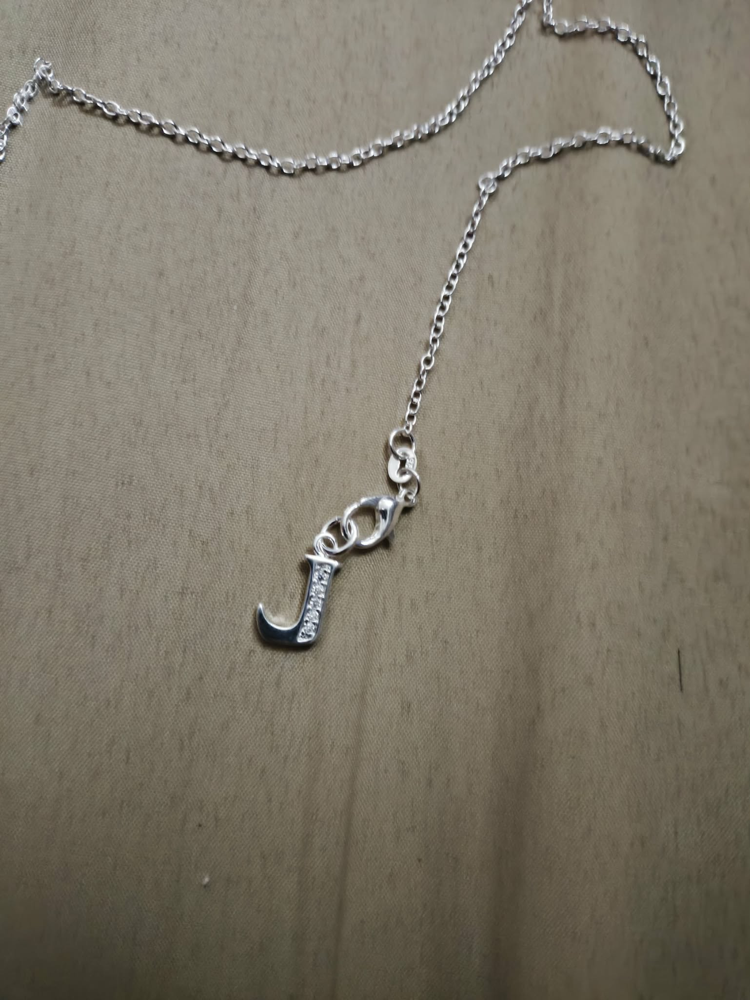
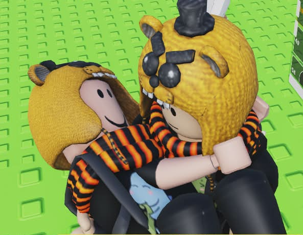
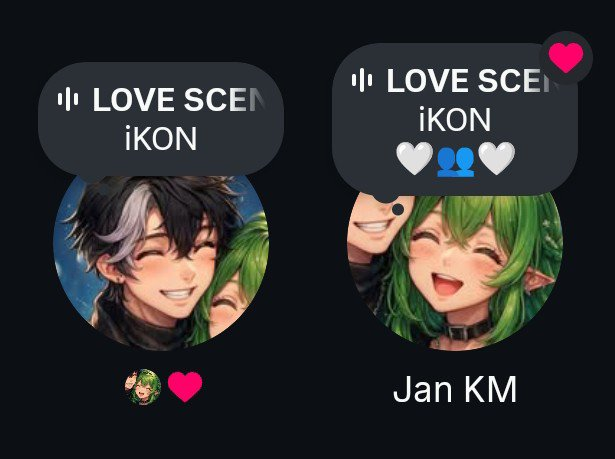
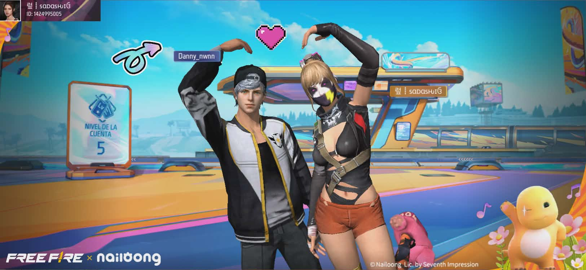
Si la vida te da mandarinas, tal vez el mensaje no es cambiarlas… sino aprender a saborearlas. A aceptar
que lo imperfecto también alimenta, que lo pequeño también importa, que lo que llega distinto no llega por
error. Hay cosas que no elegimos, pero sí elegimos qué hacer con ellas. Y quizá la verdadera madurez está
en dejar de desear otra fruta y empezar a agradecer la que tienes en las manos, porque incluso lo ácido
puede convertirse en algo dulce cuando decides verlo con otros ojos.
❤️
130
💬
50
↗
Share
@Danny nwn
Can i get a kiss? 💗😽 @liln_kn i love you <3 #trends #canigetakiss #seeyouagain #tylerthecreator
🎵 Can i get a kiss?
⌂
🔍
＋
💬
👤
❤️
130
💬
50
↗
Share
@Danny nwn
Lo hubieramos sido 💗 @liln_kn #polaroid #gemini #paratii #ai #geminiai #trend #fotopolaroid
#aigemini
🎵 Sonido original - Danny nwn
⌂
🔍
＋
💬
👤
Vivir los altibajos de la vida junto a ti es un proposito, un destino sincero que me gustaría
conservar.
Una verdad eterna en donde tú y yo a pesar de los problemas, dificultades inconvenientes, siempre
hallemos
la manera para solucionarlos. Somos una pareja, claro que si, somos novios, por supuesto, eres mi
prometida, exactamente. Pero ademas de todo eso somos un equipo, que se escucha, se apoya, se cuida
entre
si, nos protegemos, esperamos y buscamos lo mejor para el otro. No es solo el capricho de recibir amor
por
el otro por el simple hecho de que le guste el sentimiento. Significa algo mucho mas alla que eso.
Amarse no trata solo de que nos guste como nos tratamos o de sentirnos amados en los momentos
bonitos,
no es solo palabras dulces ni promesas dichas cuando todo esta bien. Amarse es quedarse, incluso
cuando
es
dificil, es decidir ser parte de la vida del otro no como espectador, sino como compañero. Es apoyarse
cuando uno cae, sostenerse cuando el mundo pesa demasiado, es convertirse en ese lugar donde el otro
puede
descansar sin miedo. Porque el amor no es solo sentir, es cuidar, es estar presente, es demostrar con
acciones que no estas solo.
Amarse es ser un equipo, es caminar en la misma direccion aunque el camino sea incierto, es velar
por
la
seguridad del otro como si fuera la propia, preocuparse sinceramente por su bienestar, por su paz, por
su
corazon. Es aprender a escuchar incluso en el silencio, entender incluso sin palabras, quedarse
incluso
cuando seria mas facil irse. Es elegir todos los dias proteger eso que construyeron juntos, no por
obligacion, sino porque el otro se vuelve parte de ti. Porque al final, amar es eso… saber que pase lo
que
pase, siempre habra alguien que no te suelta.
Despúes, aquel 31 de Julio llegó tu tan esperado cumpleaños por mi. Meses atras me habia preguntado
que podia yo regalarte para hacer de este momento tu cumpleaños tan especial tan unico, fue ahi donde
recorde una iconica escena de "Si la vida te da mandarinas" en donde Seop Park Chung, el en ese entonces
interesado en Yang Geum-myeong la hija de ae-sun. Un día de esos le digo de broma al chico, hazme un
retrato la proxima vez que te vea, pues Park Seop era pintor y vaya que era muy bueno pintando. Yo me
senti identificado en aquel joven que le gusta impresionar y amar atentamente de una manera peotica.
Para sorpresa de Yang Geum-myeong, ella recibio un cuadro enorme enorme de un retrato que le habia hecho
Park Seop, estaba atonita.
Fue cuando se me ocurrio que podría intentar hacerte un cuadro, un retrato de ti aunque nunca en toda
mi vida habia pintado un lienzo por ti lo intentaria y aunque sabia que no iba a quedar exactamente como
queria, era un gesto mas que nada simbolico, que me identificaba como Park Chung Seop. Un pintor
enamorado, entonces empece a conseguir el lienzo, las pinturas y me propuse a dibujar el boceto,
posteriormente los colores y detalles finales. El resultado final no me convenció tanto, pero eso
sumnado a otros regalitos que consegui para ti, crearon un obsequio tan lindo.
Esa noche propuse que hicieramos videollamada por primera vez, despues de tantos meses ya nos habiamos
visto el rostro en varias fotografías pero como tal no habiamos tenido esa intimidad de haber hecho una
videollamada, ambos estabamos muy nerviosos pero al momento de la verdad no podiamos contener la
felicidad en nuestros rostros al vernos a los ojos, sonreir involuntariamente se volvia mi movimiento
principal durante toda la noche. Tu te ponias toda nerviosa cuando clavaba mi mirada en ti.. era algo
tan lindo de ver.
Empezaste a abrir tu regalo con esa curiosidad tan tuya, y desde ese momento no pude dejar de mirarte,
porque tu sonrisa se convirtió en mi dosis perfecta de felicidad, en esa clase de felicidad que no se
puede fingir ni explicar, solo sentir. Ver tu reacción, ver tus ojos iluminarse poco a poco mientras
descubrías cada cosa, hizo que todo valiera la pena, cada segundo, cada detalle, cada pensamiento que
puse en ello. Cuando viste los peluches de los BTS, las cartas, la toalla de Stray Kids, no solo estabas
viendo objetos, estabas viendo partes de todo lo que pensé en ti, en lo que te gusta, en lo que te hace
feliz, en lo que te representa.
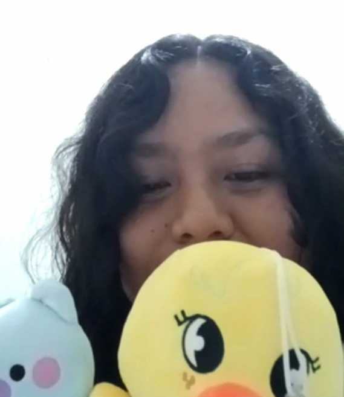
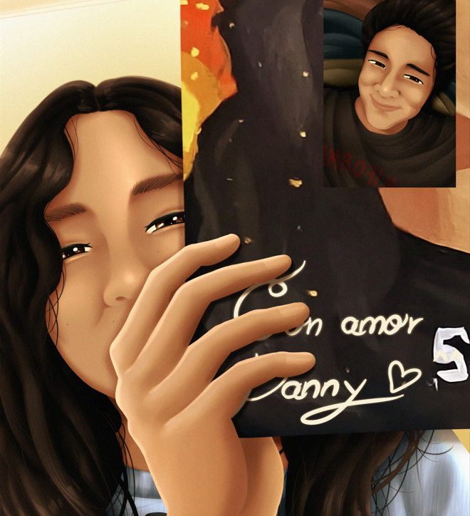
Y luego… mi cabello, embolsado con tanto cuidado, como una pequeña prueba de que pude viajar a verte,
aunque mi cuerpo no estuviera ahí, una parte de mí sí lo estaba. Un pedazo real de mí estaba a tu lado,
acompañándote, existiendo cerca de ti, como una forma de decirte que siempre estoy contigo, incluso
cuando la distancia intenta decir lo contrario.
Y como regalo final, ese retrato… ese intento de capturar lo imposible, tu lindo rostro, tu esencia,
lo que veo cuando te miro, lo que siento cuando pienso en ti. No era solo un dibujo, era mi forma de
tocarte sin tocarte, de quedarme contigo de una manera que el tiempo no pudiera borrar, de decirte sin
palabras que eres alguien que vive dentro de mí, alguien que convirtió algo tan simple como dar un
regalo en uno de los momentos más sinceros, más vulnerables y más reales que he sentido.
Algo que tambien empece a hacer como de costumbre puesto que ambos soliamos entrar de vez en cuando a
VRChat a jugar, pasar tiempo juntos y escuchar musica. Empece a crear y hacer videos musicales con
canciones de amor de nosotros dos, en donde en su mayoría ambos cantabamos e interpretabamos la canción
como en un performance, se empezo a hacer costumbre, era una forma de regalarte un recuerdo como si
estuvieramos juntos recreandolo aunque fuera solo yo el que aparece.
También hubo momentos difíciles, de esos que no se cuentan con facilidad porque pesan más de lo que
parecen. Tuvimos días donde la distancia dolía más de lo normal, donde las dudas se colaban en medio de
la noche y donde el silencio se sentía más fuerte que cualquier palabra. No todo fue perfecto, no todo
fue ligero, hubo inconvenientes, malentendidos, inseguridades y tiempos en los que el mundo parecía
ponerse en nuestra contra. Pero incluso en medio de todo eso, nunca dejamos de intentarlo.
Hubo días en los que uno de los dos estaba más sensible, más cansado, más abrumado por sus propios
pensamientos. Días en los que las circunstancias externas nos afectaban y terminaban rozando lo nuestro.
A veces no sabíamos cómo manejar lo que sentíamos, a veces reaccionábamos desde el miedo o desde el
dolor, pero aun así siempre volvíamos a hablar, a intentar entendernos, a buscar la forma de no
soltarnos.
La distancia fue una de las pruebas más grandes. Extrañarnos tanto que doliera físicamente, querer
abrazarnos y no poder, querer estar presentes en momentos importantes y tener que conformarnos con una
pantalla. Había noches en las que después de despedirnos el vacío se sentía enorme, como si algo
faltara. Y aun así, seguíamos eligiéndonos, incluso cuando era difícil, incluso cuando el corazón se
sentía apretado.
También hubo inseguridades, miedos al futuro, preguntas que no siempre tenían respuesta inmediata.
Pensamientos que nos hacían sobrepensar, escenarios imaginarios que nos asustaban. Pero lo que más
valoro es que nunca dejamos de hablar de eso. Podíamos tener miedo, podíamos estar confundidos, pero
siempre terminábamos sentándonos a conversar, a decir lo que sentíamos de verdad, sin máscaras.
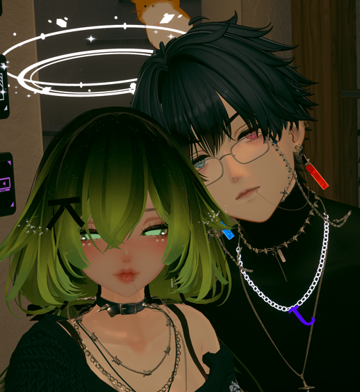
En esos momentos difíciles fue donde más aprendí a amarte de una forma real. No solo cuando todo era
risas, citas virtuales y canciones románticas, sino cuando tocaba tener paciencia, cuando tocaba
comprender, cuando tocaba bajar el orgullo y escuchar. Amar no era solo sentir bonito, era quedarme
incluso cuando las cosas se complicaban, era decidir cuidarte aunque yo también estuviera herido.
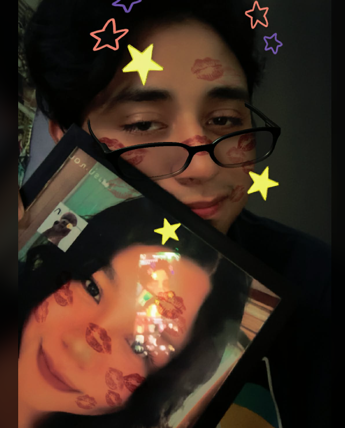
A pesar de todo, cada dificultad nos enseñó algo. Nos mostró qué cosas debíamos mejorar, qué heridas
necesitaban sanar, qué palabras debíamos aprender a decir con más suavidad. No fuimos perfectos, pero
fuimos sinceros. Y esa sinceridad fue lo que sostuvo lo nuestro en los momentos donde parecía
tambalearse.
Si algo me quedó claro en medio de esos tiempos difíciles es que lo nuestro no era superficial. Porque
cuando el amor es ligero, se va al primer problema. Y nosotros, aun con miedo, aun con dudas, aun con
distancia, decidimos quedarnos. Y para mí, eso dice más que cualquier momento perfecto: dice que lo que
sentíamos era profundo, real y lo suficientemente fuerte como para atravesar tormentas sin soltarnos.
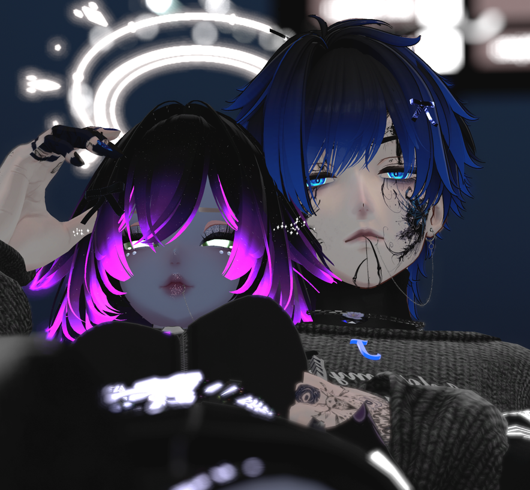
Por esas fechas ya era noviembre, ¿no es así mi amor? Se acercaba mi cumpleaños y tú, desde días antes,
me dabas pequeñas pistas, comentarios sueltos, sonrisas sospechosas que yo intentaba descifrar. No podía
creer que después de tantas cartas tuyas, de tantos detallitos llenos de amor, todavía quisieras
regalarme algo más. Sentía que estaba soñando, que no era real que alguien me quisiera de esa manera.
Esa noche hicimos videollamada, y aunque hubo complicaciones para que el paquete llegara y casi me da
algo de la ansiedad, cuando por fin lo tuve en mis manos y empecé a abrirlo contigo mirándome del otro
lado de la pantalla… te juro que fue una de las noches más felices de toda mi vida.
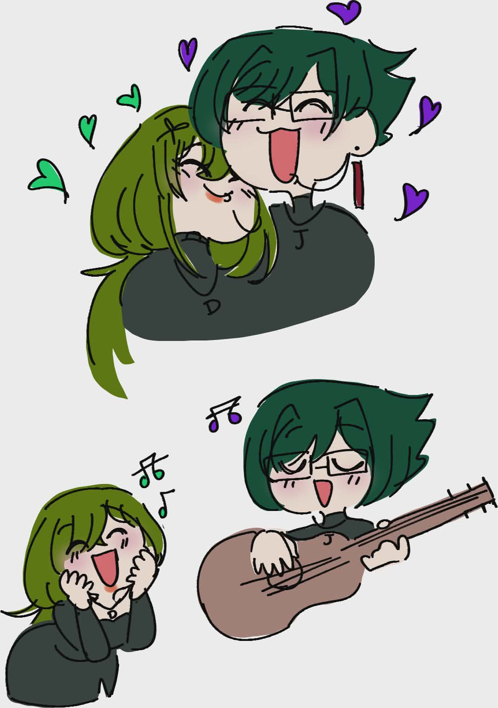
Iba sacando cada cosa con las manos temblando: el termo de Kakashi, el lego de Kakashi que amé desde el
primer segundo, la cartera nueva, la libreta de dibujo con esa carta en la primera página que me hizo
quebrarme por dentro de lo bonita que era. El peluche de Eevee tan suave, tan perfecto, como si supiera
que iba a dormir abrazándolo. Y luego todas tus manualidades… las estrellas de papel, las tiritas, las
arañitas, con tu tiempo y tu paciencia. Pero lo que más me marcó fue tu aroma, tu
perfume impregnado en toda la caja. Mi habitación olía a ti por días enteros, y cada vez que respiraba
sentía que estabas ahí conmigo, como si la distancia se hubiera rendido por un momento.
También encontré la pulsera con tu inicial, tu dona para el cabello, pequeños pedacitos de ti que ahora
vivían conmigo. Esa noche no fue solo abrir un regalo, fue sentir tu amor materializado en cada detalle.
Verte en videollamada mientras yo sonreía como un niño, escuchar tu risa, notar cómo te emocionaba verme
feliz… eso no tiene precio. Fue mi mejor cumpleaños, y sé que siempre lo será, porque no fue por lo
material, sino por la intención, por el tiempo, por el amor tan sincero que pusiste en cada cosa. Esa
noche entendí que lo nuestro era real, profundo, y que mi corazón ya te pertenecía por completo.
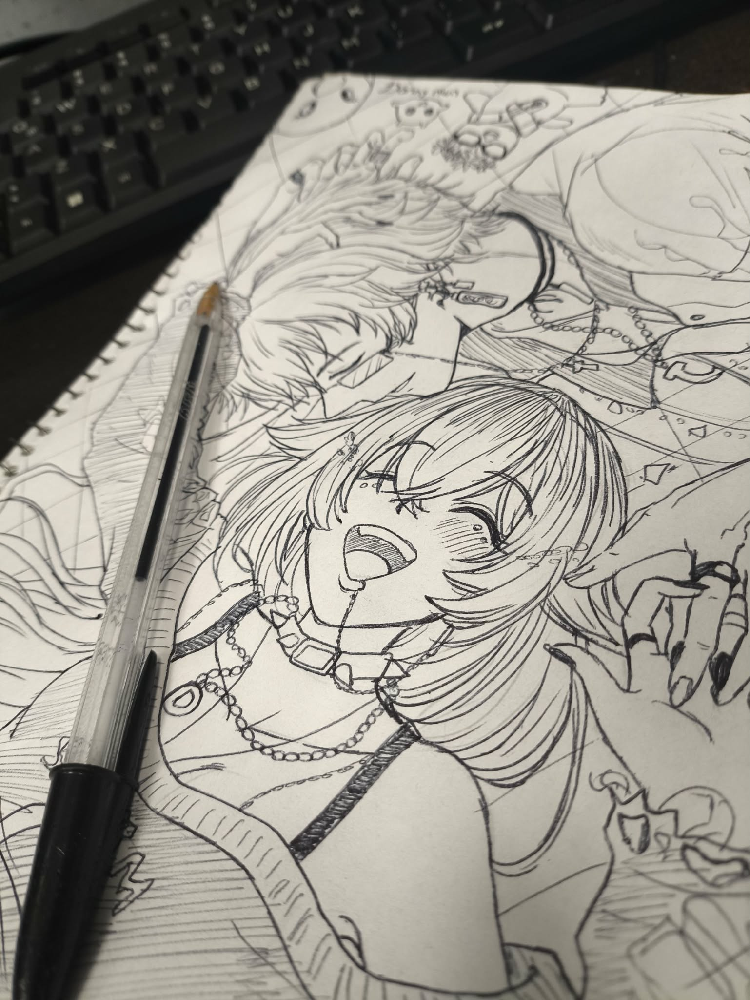
Después de esa noche dejé la decoración de la caja sobre mi cama, intacta, como si fuera un pequeño
altar de nosotros. Dormía abrazando las cosas que me mandaste, con las estrellas de papel y las
manualidades todavía esparcidas, y tu olor… tu perfume seguía ahí, impregnado en cada rincón. Mi
habitación olía a ti, y por días sentí como si durmiera contigo, como si la distancia no existiera y
estuvieras a mi lado mientras cerraba los ojos. No quería limpiar nada, no quería mover nada, tenía
miedo de que al hacerlo se fuera tu aroma, se fuera esa sensación tan real de tenerte conmigo. Prefería
ver todo tal cual lo dejé esa noche, porque así sentía que ese momento perfecto todavía no terminaba.
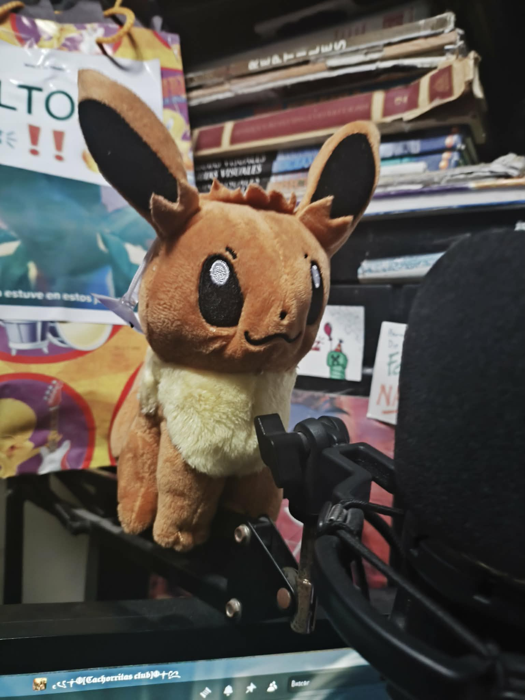
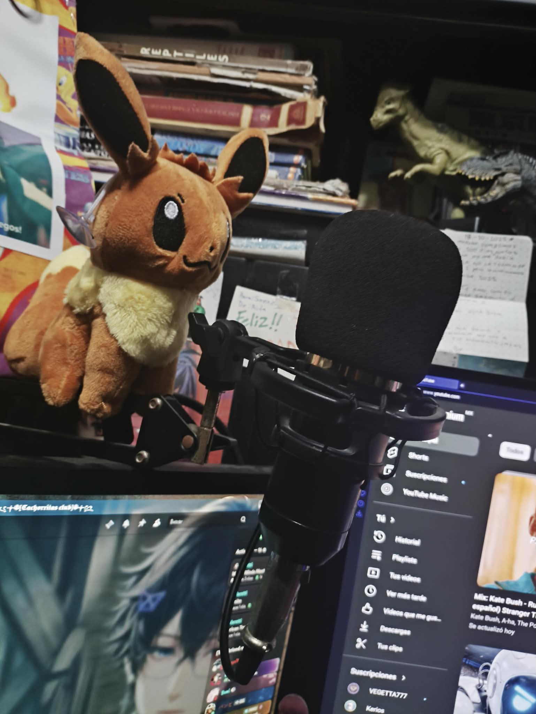
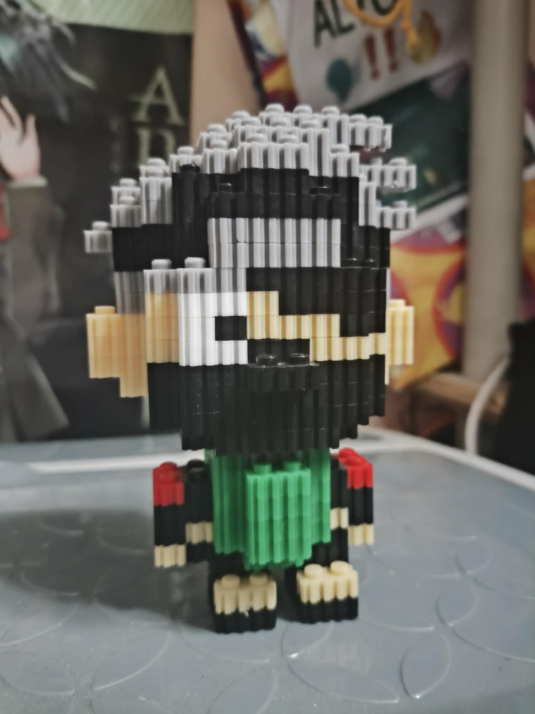
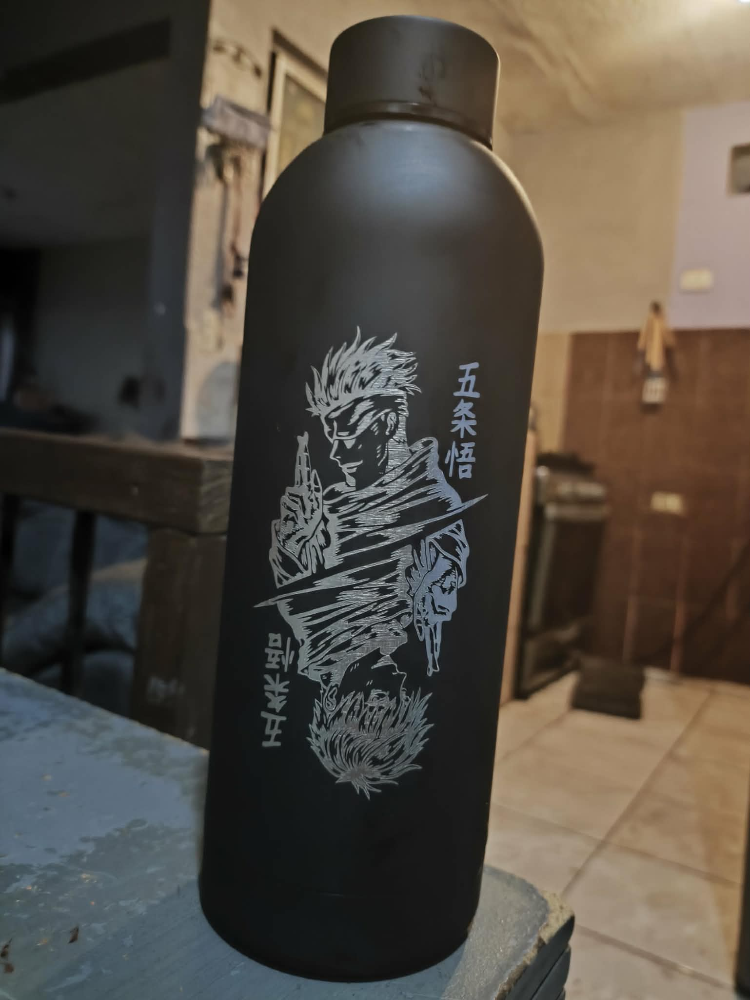
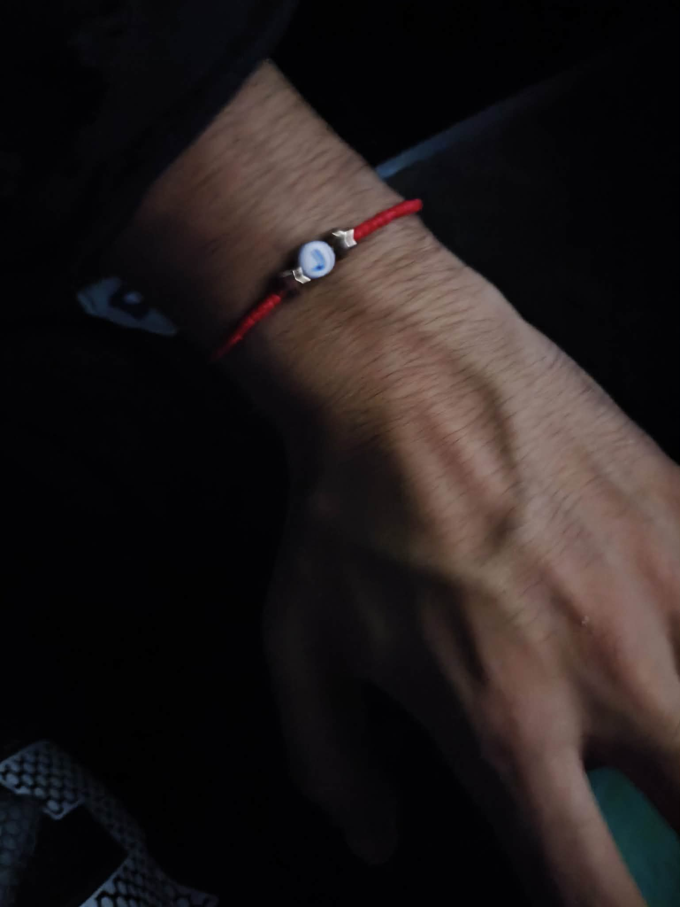
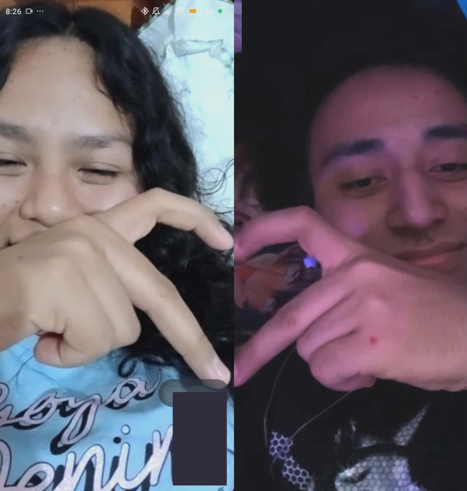
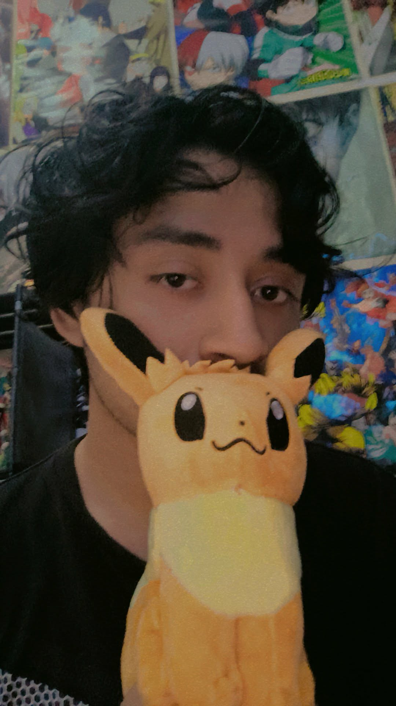
Después de esa noche dejé la decoración de la caja sobre mi cama, intacta, como si fuera un pequeño
altar de nosotros. Dormía abrazando las cosas que me mandaste, con las estrellas de papel y las
manualidades todavía esparcidas, y tu olor… tu perfume seguía ahí, impregnado en cada rincón. Mi
habitación olía a ti, y por días sentí como si durmiera contigo, como si la distancia no existiera y
estuvieras a mi lado mientras cerraba los ojos. No quería limpiar nada, no quería mover nada, tenía
miedo de que al hacerlo se fuera tu aroma, se fuera esa sensación tan real de tenerte conmigo. Prefería
ver todo tal cual lo dejé esa noche, porque así sentía que ese momento perfecto todavía no terminaba.
❤️
130
💬
50
↗
Share
@Danny nwn
Que niña tan bonita 🤭🥰💗 #camaralenta #Caplyric #CapCut #fyp #trend
🎵 Csonido original - 𝓹𝓪𝓾 𝓿𝓮𝓵𝓪𝔃𝓺𝓾𝓮𝔃❤
⌂
🔍
＋
💬
👤
❤️
130
💬
50
↗
Share
@Danny nwn
love your darling @foxxn_skz🌸 💗#Caplyric #CapCutAmor #TrendMomentos #CapCut
🎵 sonido original - Tony Quintero
⌂
🔍
＋
💬
👤
Nuestra boda virtual en VRChat fue algo que surgió casi de la nada, pero que terminó siendo uno de los
momentos más significativos para mí. Recuerdo que me habías dicho que si algún día hacíamos algo así, te
gustaría que fuera íntimo, solo tú y yo, sin ruido, sin espectadores, algo que fuera completamente
nuestro. Escogimos un mapa sutil y lindo, con una atmósfera tranquila que parecía abrazarnos mientras
estábamos ahí parados frente al otro. No necesitábamos nada más, porque lo importante era que estábamos
juntos, mirándonos, sintiendo que ese momento nos pertenecía por completo.
Nos dijimos palabras tan sinceras que todavía resuenan en mi corazón. Yo me expresé como nunca, abrí
todo lo que sentía, todo lo que significabas para mí, y verte llorar de alegría mientras escuchabas mis
votos fue algo que jamás voy a olvidar. Sentí una felicidad tan pura cuando llegó el momento final y
ambos dijimos “sí”. Fue tan bonito, tan nuestro, tan lleno de amor real que por un instante todo se
sintió verdadero más allá de lo virtual. No era solo un juego, era la forma más sincera que encontramos
para prometernos que queríamos seguir caminando juntos.
Nos vimos por primera vez
Recuerdo que apenas llevábamos una semana de ser novios cuando ya había tomado una decisión que cambió
todo para mí: iba a viajar a verte. No importaba la distancia, no importaban los miedos ni lo complicado
que parecía, yo solo sabía que quería llegar hasta tu casa, mirarte a los ojos y abrazarte de verdad.
Desde ese momento empecé a imaginar cada detalle, a soñar con el día en que por fin estaría frente a ti,
porque sentía que nuestro amor merecía ese esfuerzo y mucho más.
Durante nueve meses planeé ese viaje con paciencia, guardando cada ilusión y cada esperanza en silencio.
Te prometí que lo haría antes de que terminara el año, y esa promesa se volvió mi motor, incluso en los
días difíciles. Hubo obstáculos, dudas y momentos en los que parecía imposible, pero de alguna forma el
destino se alineó, como si los astros quisieran que ese encuentro sucediera. Cuando por fin tuve la
oportunidad y el tiempo para hacerlo realidad, sentí que todo el esfuerzo había valido la pena.
Nunca voy a olvidar la felicidad que sentiste cuando te conté y te mostré los boletos que había comprado
para ir a verte. Tus reacciones, tu emoción, esos días en los que no dejabas de sonreír… se quedaron
grabados en mi corazón. Qué tierna eres, amor. Iría a finales de diciembre, y la idea de pasar Navidad
contigo parecía un sueño imposible que poco a poco se volvía real. Desde entonces, cada segundo se llenó
de ilusión, porque sabía que pronto dejaríamos de ser solo pantallas y distancia, y empezaríamos a ser
nosotros, juntos.
Recuerdo perfectamente todo el viaje, como si hubiera sido ayer. Desde el momento en que subí al avión,
mi corazón no dejaba de latir rápido, porque cada kilómetro que avanzaba me acercaba más a ti. Miraba
por la ventana y solo pensaba en tu sonrisa, en tu voz, en tus abrazos que aún no conocía, pero que ya
sentía como mi hogar. Cuando llegué a Ciudad de México estaba nervioso, emocionado, y también un poco
perdido, pero con una felicidad tan grande que nada podía opacarla.
Después de aterrizar, todo fue una pequeña aventura. A duras penas logré tomar el autobús que me
llevaría hasta Cuautla, entre el cansancio, el estrés y la emoción que no me dejaba pensar con claridad.
Cada minuto parecía eterno, pero al mismo tiempo sentía que todo avanzaba demasiado rápido. Solo quería
llegar, solo quería verte. Desde Cuautla, el último trayecto hasta el hotel en Tetela de Volcán fue
pesado, ya estaba agotado, pero mi mente seguía repitiendo tu nombre.
Se nos hizo muy tarde ese día, yo estaba completamente cansado, pero cuando me dijiste que tu mamá te
llevaría al hotel para que nos viéramos aunque fuera un momento, sentí que toda la energía volvía a mi
cuerpo. Recuerdo los nervios, la pena, la emoción tan fuerte que me hacía temblar. No sabía cómo iba a
reaccionar, pero sabía que ese instante marcaría nuestras vidas para siempre.
Cuando por fin te vi, no pude controlarme. Corrí hacia ti y te abracé con todas mis fuerzas. Finalmente
lo había logrado, había llegado hasta ti, lo conseguimos. Era real, ya no era una pantalla, ya no era
solo distancia. Eras tú, frente a mí, entre mis brazos. Sentí tus caricias, tu calor, y todo el mundo
desapareció en ese instante. Fue uno de los momentos más felices de toda mi vida.
❤️
130
💬
50
↗
Share
@Danny nwn
Ya le paro con los tiktoks lo juro jajdjajs 💗 #CapCut #tren #fyp #couple
🎵 sonido original - Danny nwn
⌂
🔍
＋
💬
👤
❤️
130
💬
50
↗
Share
@Danny nwn
💗 #couple #fyp #parejas #love
🎵 original sound - arq
⌂
🔍
＋
💬
👤
También recuerdo haber conocido a tu mamá y que tú conocieras a mi papá. Fue breve, pero tan hermoso,
tan especial. Todo era nuevo, todo era real. Y al despedirnos esa primera noche, ese besito torpe pero
tan sincero fue la confirmación de que nuestro amor existía más allá de cualquier distancia. Fue lindo,
fue nuestro, fue perfecto.
Al día siguiente fui directamente a tu casa y desde ahí nos fuimos a Plaza Atrios. Caminamos tomados de
la mano por primera vez, y ese sentimiento fue indescriptible. Te invité un Subway y tuvimos nuestra
primera cita presencial. No faltaron los besos, tanto los tiernos como los apasionados, y después fuimos
a ver Avatar. Aunque la verdad, mitad de la película la vimos y la otra mitad la pasamos besándonos y
riendo.
Esa noche llegué tarde al hotel y me regañaron un poco, pero valió completamente la pena. Era Noche
Buena, y no podía haber pedido un mejor regalo que estar contigo. Al día siguiente, en Navidad, fui a
conocer a tu familia. A tu hermano, a tu papá, y conviví con todos. Hubo momentos incómodos y algunos
choques, pero al final todo salió bien. Aun así, sentí que el tiempo contigo era demasiado poco.
Los días siguientes los pasamos en tu casa, viendo Stranger Things, escuchando música, haciendo
manualidades, besándonos, bailando, jugando, haciéndonos cosquillas y grabando trends de TikTok. Tomamos
muchísimas fotos, nos acurrucamos en tu cama, incluso dormimos juntos. Fueron días tan llenos de amor,
de ternura, de paz, que desearía poder revivirlos una y otra vez.
También salimos de nuevo a Cuautla, compramos llaveros para hacer match, legos para armar juntos, y
hasta pizza para comer en casa. Grabamos tantos videos, tantas fotos, creamos recuerdos que vivirán
siempre en mí. Todo era mágico, perfecto, único. Sentir tus abrazos, tu calor, tus caricias, saber que
nos amábamos tanto… era imposible soltarnos las manos, no importaba dónde estuviéramos.
El último día llegó demasiado rápido. No quería irme. Escribí en una hoja de color: “Hasta el sol
envidiaría lo mucho que tú brillas, mi dulce estrella”, y la pegué como una prueba de que lo logré, de
que estuve ahí contigo. Nos cortamos un mechón de cabello como recuerdo, compartimos nuestros anillos de
promesa, sellando nuestra lealtad. Cuando tu mamá nos llevó a la estación, no podía dejar de voltear a
verte. No quería irme, quería quedarme. El regreso fue doloroso, y cuando desperté en casa al día
siguiente, entendí cuánto te extrañaba… más de lo que las palabras pueden explicar.
Hoy solo quiero mirarte a los ojos, aunque sea a la distancia, y decirte con todo mi corazón feliz 14 de
febrero, mi amor. Gracias por existir, gracias por llegar a mi vida de una forma tan inesperada, por
convertirte en la más linda de mis casualidades y en la razón más hermosa de mis días. Eres y siempre
serás
mi eterno amor, la luz de mi camino, la calma en mis tormentas, el lugar al que siempre quiero volver.
No
existen palabras suficientes para explicarte cuánto te amo, porque lo que siento por ti va más allá de
cualquier idioma, más allá del tiempo y de la distancia. Te amo mil millones y aún así siento que me
quedo
corto. Gracias por cada recuerdo, por cada risa, por cada lágrima compartida, por cada llamada, por cada
noche sin dormir, por cada detalle, por cada abrazo que guardo en mi alma. Gracias por estos 11 meses
tan
llenos de amor sincero, profundo y real, y por enseñarme que el amor verdadero sí existe, que sí vale la
pena, que sí lucha, que sí permanece. Vamos por muchos meses más, por muchos años más, por una vida
entera
juntos, construyendo nuestro futuro, cumpliendo nuestros sueños, tomados de la mano sin soltarnos jamás.
Oel
ngati kameie, te veo, te siento, te elijo hoy y siempre. Te amo, te amo, te amo… y gracias por todo, mi
vida 💗 My Jann 💗 Mi amor 💗 Mi esposita 💗 Mi querida 💗 Mi prometida 💗 Mi pareja 💗 Mi sueño 💗 Mi
razón
de ser 💗 Mi querer 💗 Mi novia 💗 Mi cielo 💗 Mi osita 💗 Mi luz 💗 Mi felicidad 💗 Mi personita 💗LO
ERES
TODO PARA MI MI AMOOOR GRACIAS POR TANTO FELIZ SAN VALENTIN MI JANNET!!!💗 💗 💗 💗 💗